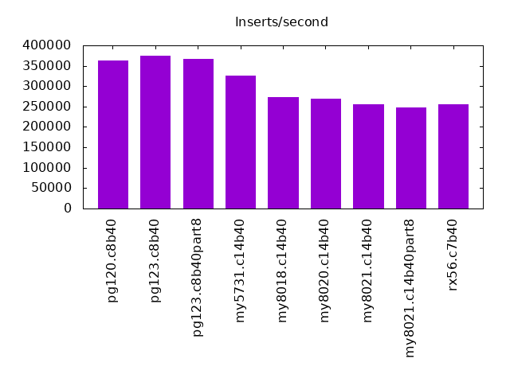
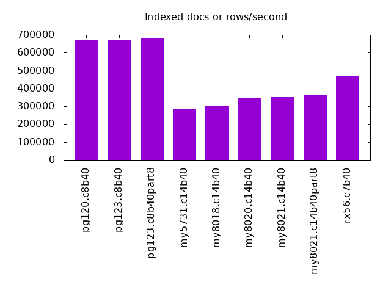
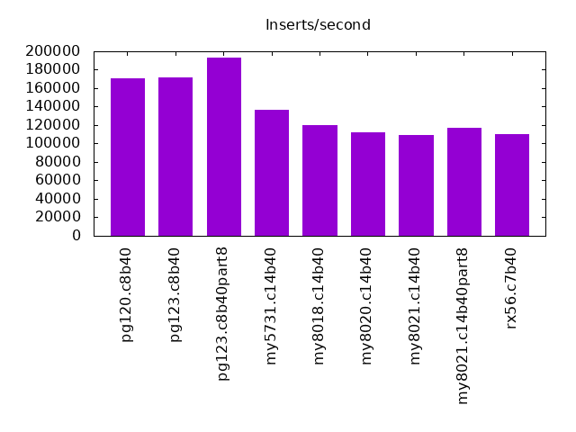
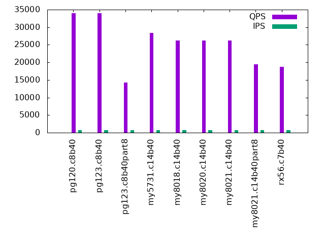
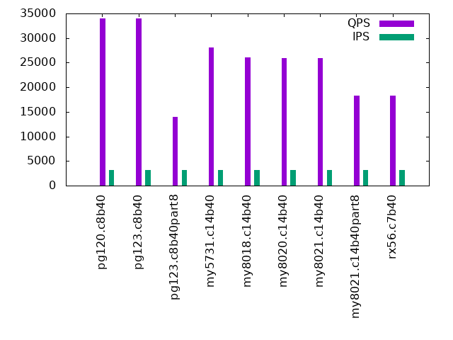
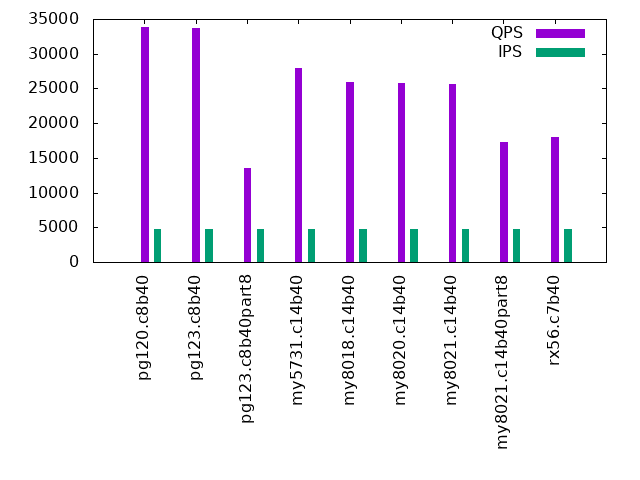
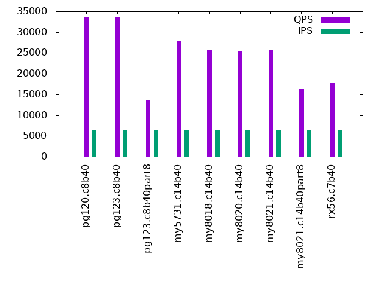
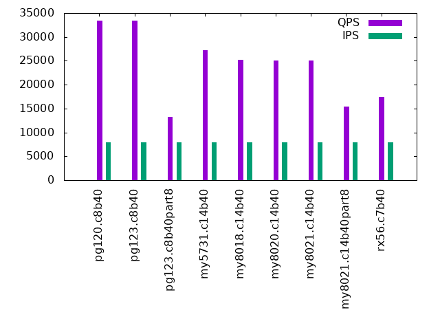

This is a report for the insert benchmark with 40M docs and 8 clients. It is generated by scripts (bash, awk, sed) and Tufte might not be impressed. An overview of the insert benchmark is here and a short update is here. Below, by DBMS, I mean DBMS+version.config. An example is my8020.c10b40 where my means MySQL, 8020 is version 8.0.20 and c10b40 is the name for the configuration file. All configurations are stored here.
The test server is a c3.8xlarge host with 20,000 EBS PIOPs, 60G RAM and 16 CPU cores (HT disabled). Clients and the DBMS share one server.
The tested DBMS are:
The numbers are inserts/s for l.i0 and l.i1, indexed docs (or rows) /s for l.x and queries/s for q*.2. The values are the average rate over the entire test for inserts (IPS) and queries (QPS). The range of values for IPS and QPS is split into 3 parts: bottom 25%, middle 50%, top 25%. Values in the bottom 25% have a red background, values in the top 25% have a green background and values in the middle have no color. A gray background is used for values that can be ignored because the DBMS did not sustain the target insert rate. Red backgrounds are not used when the minimum value is within 80% of the max value.
| dbms | l.i0 | l.x | l.i1 | q100.2 | q200.2 | q400.2 | q600.2 | q800.2 | q1000.2 |
|---|---|---|---|---|---|---|---|---|---|
| pg120.c8b40 | 363636 | 668333 | 170940 | 33973 | 33996 | 34033 | 33859 | 33682 | 33417 |
| pg123.c8b40 | 373832 | 668333 | 171674 | 33989 | 34003 | 33970 | 33756 | 33656 | 33394 |
| pg123.c8b40part8 | 366972 | 679661 | 193237 | 14329 | 13746 | 13906 | 13532 | 13533 | 13209 |
| my5731.c14b40 | 325203 | 288489 | 136986 | 28362 | 28227 | 28037 | 27885 | 27746 | 27274 |
| my8018.c14b40 | 273973 | 301504 | 119760 | 26268 | 26279 | 26128 | 25864 | 25720 | 25264 |
| my8020.c14b40 | 268456 | 348696 | 111732 | 26157 | 26128 | 25941 | 25720 | 25542 | 25111 |
| my8021.c14b40 | 256410 | 351754 | 109589 | 26149 | 26048 | 25877 | 25682 | 25578 | 25074 |
| my8021.c14b40part8 | 248447 | 361261 | 117302 | 19405 | 18538 | 18282 | 17285 | 16314 | 15380 |
| rx56.c7b40 | 254777 | 471765 | 110193 | 18679 | 18509 | 18249 | 17995 | 17702 | 17459 |
This lists the average rate of inserts/s for the tests that do inserts concurrent with queries. For such tests the query rate is listed in the table above. The read+write tests are setup so that the insert rate should match the target rate every second. Cells that are not at least 95% of the target have a red background to indicate a failure to satisfy the target.
| dbms | q100.2 | q200.2 | q400.2 | q600.2 | q800.2 | q1000.2 |
|---|---|---|---|---|---|---|
| pg120.c8b40 | 790 | 1580 | 3160 | 4739 | 6316 | 7899 |
| pg123.c8b40 | 790 | 1579 | 3160 | 4739 | 6316 | 7899 |
| pg123.c8b40part8 | 790 | 1580 | 3160 | 4737 | 6319 | 7895 |
| my5731.c14b40 | 790 | 1580 | 3160 | 4739 | 6319 | 7899 |
| my8018.c14b40 | 790 | 1580 | 3160 | 4739 | 6319 | 7899 |
| my8020.c14b40 | 790 | 1580 | 3160 | 4739 | 6319 | 7899 |
| my8021.c14b40 | 789 | 1580 | 3160 | 4739 | 6319 | 7899 |
| my8021.c14b40part8 | 790 | 1580 | 3160 | 4739 | 6319 | 7899 |
| rx56.c7b40 | 790 | 1580 | 3160 | 4739 | 6319 | 7899 |
| target | 800 | 1600 | 3200 | 4800 | 6400 | 8000 |
l.i0: load without secondary indexes. Graphs for performance per 1-second interval are here.
Average throughput:
Insert response time histogram: each cell has the percentage of responses that take <= the time in the header and max is the max response time in seconds. For the max column values in the top 25% of the range have a red background and in the bottom 25% of the range have a green background. The red background is not used when the min value is within 80% of the max value.
| dbms | 256us | 1ms | 4ms | 16ms | 64ms | 256ms | 1s | 4s | 16s | gt | max |
|---|---|---|---|---|---|---|---|---|---|---|---|
| pg120.c8b40 | 99.251 | 0.720 | 0.028 | 0.002 | 0.067 | ||||||
| pg123.c8b40 | 99.296 | 0.689 | 0.010 | 0.006 | 0.116 | ||||||
| pg123.c8b40part8 | 99.269 | 0.697 | 0.030 | 0.004 | 0.068 | ||||||
| my5731.c14b40 | 99.167 | 0.705 | 0.093 | 0.019 | 0.015 | 0.303 | |||||
| my8018.c14b40 | 97.602 | 2.215 | 0.146 | 0.025 | 0.012 | 0.291 | |||||
| my8020.c14b40 | 97.718 | 2.073 | 0.177 | 0.021 | 0.012 | 0.319 | |||||
| my8021.c14b40 | 97.585 | 2.224 | 0.159 | 0.016 | 0.017 | 0.317 | |||||
| my8021.c14b40part8 | 97.273 | 2.528 | 0.158 | 0.028 | 0.013 | 0.348 | |||||
| rx56.c7b40 | 98.888 | 1.085 | nonzero | 0.020 | 0.006 | 0.321 |
Performance metrics for the DBMS listed above. Some are normalized by throughput, others are not. Legend for results is here.
ips qps rps rkbps wkbps rpq rkbpq wkbpi csps cpups cspq cpupq dbgb1 dbgb2 rss maxop p50 p99 tag 363636 0 0 0 166883 0.000 0.000 0.459 29878 62.5 0.082 28 3.8 10.4 0.0 0.067 62862 13591 pg120.c8b40 373832 0 0 0 168722 0.000 0.000 0.451 29768 62.3 0.080 27 3.8 10.4 0.0 0.116 61631 17591 pg123.c8b40 366972 0 0 0 169059 0.000 0.000 0.461 29438 63.9 0.080 28 3.8 10.4 0.0 0.068 63428 18579 pg123.c8b40part8 325203 0 0 0 91282 0.000 0.000 0.281 30743 62.9 0.095 31 2.7 36.2 6.1 0.303 52241 36179 my5731.c14b40 273973 0 0 0 82198 0.000 0.000 0.300 73473 64.8 0.268 38 2.7 36.2 6.3 0.291 42277 30085 my8018.c14b40 268456 0 0 0 79831 0.000 0.000 0.297 40362 65.6 0.150 39 2.7 36.3 6.3 0.319 40772 27976 my8020.c14b40 256410 0 0 0 75510 0.000 0.000 0.294 38734 64.2 0.151 40 2.7 36.3 6.3 0.317 39769 18279 my8021.c14b40 248447 0 0 0 73510 0.000 0.000 0.296 38098 64.7 0.153 42 2.8 36.4 6.3 0.348 37957 19178 my8021.c14b40part8 254777 0 0 0 72025 0.000 0.000 0.283 26253 61.5 0.103 39 2.0 4.1 0.8 0.321 38776 13385 rx56.c7b40
l.x: create secondary indexes.
Average throughput:
Performance metrics for the DBMS listed above. Some are normalized by throughput, others are not. Legend for results is here.
ips qps rps rkbps wkbps rpq rkbpq wkbpi csps cpups cspq cpupq dbgb1 dbgb2 rss maxop p50 p99 tag 668333 0 0 0 140534 0.000 0.000 0.210 1850 28.3 0.003 7 7.4 15.7 0.0 0.003 NA NA pg120.c8b40 668333 0 0 0 139015 0.000 0.000 0.208 1882 28.8 0.003 7 7.4 15.7 0.0 0.003 NA NA pg123.c8b40 679661 0 0 0 146241 0.000 0.000 0.215 1829 29.3 0.003 7 7.4 15.7 0.0 0.099 NA NA pg123.c8b40part8 288489 0 0 3 179685 0.000 0.000 0.623 19654 13.0 0.068 7 5.9 39.5 11.0 0.042 NA NA my5731.c14b40 301504 0 0 33 186077 0.000 0.000 0.617 28390 14.4 0.094 8 5.9 39.5 11.1 0.004 NA NA my8018.c14b40 348696 0 17 270 198523 0.000 0.001 0.569 16293 17.3 0.047 8 5.9 39.5 9.0 0.007 NA NA my8020.c14b40 351754 0 15 244 210344 0.000 0.001 0.598 19540 18.2 0.056 8 5.9 39.5 8.9 0.005 NA NA my8021.c14b40 361261 0 36 580 180987 0.000 0.002 0.501 20661 17.9 0.057 8 6.0 39.6 8.6 0.007 NA NA my8021.c14b40part8 471765 0 2 109 103319 0.000 0.000 0.219 1764 39.0 0.004 13 4.6 6.7 3.2 0.005 NA NA rx56.c7b40
l.i1: continue load after secondary indexes created. Graphs for performance per 1-second interval are here.
Average throughput:
Insert response time histogram: each cell has the percentage of responses that take <= the time in the header and max is the max response time in seconds. For the max column values in the top 25% of the range have a red background and in the bottom 25% of the range have a green background. The red background is not used when the min value is within 80% of the max value.
| dbms | 256us | 1ms | 4ms | 16ms | 64ms | 256ms | 1s | 4s | 16s | gt | max |
|---|---|---|---|---|---|---|---|---|---|---|---|
| pg120.c8b40 | 97.223 | 2.035 | 0.718 | 0.024 | 0.223 | ||||||
| pg123.c8b40 | 97.358 | 1.914 | 0.706 | 0.021 | 0.155 | ||||||
| pg123.c8b40part8 | 0.100 | 99.174 | 0.587 | 0.108 | 0.031 | 0.175 | |||||
| my5731.c14b40 | 97.634 | 1.407 | 0.894 | 0.060 | 0.004 | 0.311 | |||||
| my8018.c14b40 | 95.403 | 3.552 | 0.966 | 0.078 | 0.001 | 0.295 | |||||
| my8020.c14b40 | 95.558 | 3.766 | 0.531 | 0.107 | 0.039 | 0.644 | |||||
| my8021.c14b40 | 95.190 | 4.144 | 0.517 | 0.113 | 0.036 | 0.521 | |||||
| my8021.c14b40part8 | 96.692 | 2.849 | 0.379 | 0.066 | 0.015 | 0.575 | |||||
| rx56.c7b40 | 87.784 | 12.191 | 0.011 | 0.005 | 0.010 | 0.321 |
Performance metrics for the DBMS listed above. Some are normalized by throughput, others are not. Legend for results is here.
ips qps rps rkbps wkbps rpq rkbpq wkbpi csps cpups cspq cpupq dbgb1 dbgb2 rss maxop p50 p99 tag 170940 0 0 0 236471 0.000 0.000 1.383 35597 62.0 0.208 58 15.1 42.9 0.0 0.223 27420 1349 pg120.c8b40 171674 0 0 0 236505 0.000 0.000 1.378 35757 61.8 0.208 58 15.1 42.9 0.0 0.155 27220 1348 pg123.c8b40 193237 0 0 0 239821 0.000 0.000 1.241 39292 63.8 0.203 53 16.6 42.1 0.0 0.175 27669 2098 pg123.c8b40part8 136986 0 0 0 145368 0.000 0.000 1.061 33005 54.8 0.241 64 15.9 49.5 19.9 0.311 18928 2797 my5731.c14b40 119760 0 0 0 138254 0.000 0.000 1.154 82734 60.2 0.691 80 15.9 49.5 20.1 0.295 15888 999 my8018.c14b40 111732 0 495 7922 139844 0.004 0.071 1.252 52545 57.1 0.470 82 15.9 49.5 20.1 0.644 16332 150 my8020.c14b40 109589 0 482 7707 138746 0.004 0.070 1.266 51633 56.8 0.471 83 15.9 49.5 20.0 0.521 15932 200 my8021.c14b40 117302 0 227 3627 116619 0.002 0.031 0.994 43703 59.6 0.373 81 14.8 48.3 17.5 0.575 16431 250 my8021.c14b40part8 110193 0 470 7520 96886 0.004 0.068 0.879 33951 46.7 0.308 68 10.5 13.6 3.6 0.321 14084 9389 rx56.c7b40
q100.2: range queries with 100 insert/s per client, 2nd loop. Graphs for performance per 1-second interval are here.
Average throughput:
Query response time histogram: each cell has the percentage of responses that take <= the time in the header and max is the max response time in seconds. For max values in the top 25% of the range have a red background and in the bottom 25% of the range have a green background. The red background is not used when the min value is within 80% of the max value.
| dbms | 256us | 1ms | 4ms | 16ms | 64ms | 256ms | 1s | 4s | 16s | gt | max |
|---|---|---|---|---|---|---|---|---|---|---|---|
| pg120.c8b40 | 99.120 | 0.867 | 0.013 | 0.001 | nonzero | 0.033 | |||||
| pg123.c8b40 | 99.134 | 0.854 | 0.012 | 0.001 | nonzero | 0.027 | |||||
| pg123.c8b40part8 | 99.962 | 0.037 | 0.001 | nonzero | 0.024 | ||||||
| my5731.c14b40 | 60.749 | 39.247 | 0.004 | nonzero | nonzero | 0.034 | |||||
| my8018.c14b40 | 4.702 | 95.292 | 0.006 | nonzero | nonzero | 0.035 | |||||
| my8020.c14b40 | 2.946 | 97.047 | 0.006 | nonzero | nonzero | nonzero | 0.070 | ||||
| my8021.c14b40 | 2.886 | 97.107 | 0.006 | nonzero | nonzero | 0.036 | |||||
| my8021.c14b40part8 | 99.993 | 0.007 | nonzero | nonzero | 0.018 | ||||||
| rx56.c7b40 | 99.989 | 0.011 | nonzero | nonzero | 0.016 |
Insert response time histogram: each cell has the percentage of responses that take <= the time in the header and max is the max response time in seconds. For max values in the top 25% of the range have a red background and in the bottom 25% of the range have a green background. The red background is not used when the min value is within 80% of the max value.
| dbms | 256us | 1ms | 4ms | 16ms | 64ms | 256ms | 1s | 4s | 16s | gt | max |
|---|---|---|---|---|---|---|---|---|---|---|---|
| pg120.c8b40 | 91.194 | 0.299 | 8.392 | 0.115 | 0.081 | ||||||
| pg123.c8b40 | 91.101 | 0.344 | 8.417 | 0.139 | 0.083 | ||||||
| pg123.c8b40part8 | 92.715 | 2.177 | 5.097 | 0.010 | 0.066 | ||||||
| my5731.c14b40 | 99.257 | 0.111 | 0.628 | 0.003 | 0.093 | ||||||
| my8018.c14b40 | 94.851 | 4.524 | 0.625 | 0.040 | |||||||
| my8020.c14b40 | 91.000 | 8.375 | 0.615 | 0.010 | 0.078 | ||||||
| my8021.c14b40 | 94.212 | 5.170 | 0.615 | 0.003 | 0.074 | ||||||
| my8021.c14b40part8 | 91.872 | 7.878 | 0.250 | 0.027 | |||||||
| rx56.c7b40 | 99.174 | 0.826 | 0.013 |
Performance metrics for the DBMS listed above. Some are normalized by throughput, others are not. Legend for results is here.
ips qps rps rkbps wkbps rpq rkbpq wkbpi csps cpups cspq cpupq dbgb1 dbgb2 rss maxop p50 p99 tag 790 33973 0 0 5154 0.000 0.000 6.525 131704 39.1 3.877 184 15.8 47.1 0.0 0.033 4299 4219 pg120.c8b40 790 33989 0 0 5163 0.000 0.000 6.536 131766 39.1 3.877 184 15.8 47.1 0.0 0.027 4299 4187 pg123.c8b40 790 14329 0 0 4217 0.000 0.000 5.338 56552 43.9 3.947 490 17.2 46.3 0.0 0.024 1774 1742 pg123.c8b40part8 790 28362 0 0 1719 0.000 0.000 2.176 110333 45.8 3.890 258 17.6 51.2 20.9 0.034 3597 3548 my5731.c14b40 790 26268 0 0 1879 0.000 0.000 2.379 103059 46.2 3.923 281 17.6 51.2 21.1 0.035 3324 3260 my8018.c14b40 790 26157 0 0 1972 0.000 0.000 2.496 102593 45.9 3.922 281 17.6 51.2 21.1 0.070 3310 3260 my8020.c14b40 789 26149 0 0 2022 0.000 0.000 2.561 102660 45.6 3.926 279 17.6 51.2 21.1 0.036 3292 3244 my8021.c14b40 790 19405 0 0 482 0.000 0.000 0.610 76154 46.7 3.924 385 15.4 48.9 19.2 0.018 2461 2445 my8021.c14b40part8 790 18679 0 0 276 0.000 0.000 0.349 76692 47.0 4.106 403 9.6 13.2 12.4 0.016 2349 2285 rx56.c7b40
q200.2: range queries with 200 insert/s per client, 2nd loop. Graphs for performance per 1-second interval are here.
Average throughput:
Query response time histogram: each cell has the percentage of responses that take <= the time in the header and max is the max response time in seconds. For max values in the top 25% of the range have a red background and in the bottom 25% of the range have a green background. The red background is not used when the min value is within 80% of the max value.
| dbms | 256us | 1ms | 4ms | 16ms | 64ms | 256ms | 1s | 4s | 16s | gt | max |
|---|---|---|---|---|---|---|---|---|---|---|---|
| pg120.c8b40 | 98.973 | 1.010 | 0.015 | 0.001 | nonzero | 0.031 | |||||
| pg123.c8b40 | 98.991 | 0.991 | 0.016 | 0.002 | nonzero | 0.033 | |||||
| pg123.c8b40part8 | 99.946 | 0.053 | 0.001 | nonzero | 0.020 | ||||||
| my5731.c14b40 | 59.773 | 40.220 | 0.006 | nonzero | nonzero | nonzero | 0.079 | ||||
| my8018.c14b40 | 5.603 | 94.389 | 0.008 | nonzero | nonzero | nonzero | 0.068 | ||||
| my8020.c14b40 | 3.295 | 96.696 | 0.008 | nonzero | nonzero | 0.041 | |||||
| my8021.c14b40 | 2.353 | 97.638 | 0.009 | nonzero | nonzero | 0.029 | |||||
| my8021.c14b40part8 | 99.989 | 0.010 | 0.001 | nonzero | 0.021 | ||||||
| rx56.c7b40 | nonzero | 99.978 | 0.021 | 0.001 | nonzero | 0.025 |
Insert response time histogram: each cell has the percentage of responses that take <= the time in the header and max is the max response time in seconds. For max values in the top 25% of the range have a red background and in the bottom 25% of the range have a green background. The red background is not used when the min value is within 80% of the max value.
| dbms | 256us | 1ms | 4ms | 16ms | 64ms | 256ms | 1s | 4s | 16s | gt | max |
|---|---|---|---|---|---|---|---|---|---|---|---|
| pg120.c8b40 | 86.429 | 2.988 | 10.573 | 0.010 | 0.073 | ||||||
| pg123.c8b40 | 86.222 | 3.115 | 10.653 | 0.010 | 0.079 | ||||||
| pg123.c8b40part8 | 97.554 | 1.748 | 0.693 | 0.005 | 0.095 | ||||||
| my5731.c14b40 | 99.056 | 0.724 | 0.217 | 0.003 | 0.092 | ||||||
| my8018.c14b40 | 87.255 | 12.512 | 0.229 | 0.003 | 0.070 | ||||||
| my8020.c14b40 | 88.399 | 11.340 | 0.259 | 0.002 | 0.074 | ||||||
| my8021.c14b40 | 85.399 | 14.297 | 0.304 | 0.033 | |||||||
| my8021.c14b40part8 | 87.436 | 12.314 | 0.250 | 0.031 | |||||||
| rx56.c7b40 | 94.552 | 5.444 | 0.003 | 0.022 |
Performance metrics for the DBMS listed above. Some are normalized by throughput, others are not. Legend for results is here.
ips qps rps rkbps wkbps rpq rkbpq wkbpi csps cpups cspq cpupq dbgb1 dbgb2 rss maxop p50 p99 tag 1580 33996 0 0 6656 0.000 0.000 4.213 131364 39.5 3.864 186 18.7 50.1 0.0 0.031 4315 4219 pg120.c8b40 1579 34003 0 0 6666 0.000 0.000 4.222 131455 39.6 3.866 186 18.7 50.0 0.0 0.033 4299 4171 pg123.c8b40 1580 13746 0 0 2507 0.000 0.000 1.587 54277 43.4 3.949 505 18.4 47.5 0.0 0.020 1742 1710 pg123.c8b40part8 1580 28227 0 0 2721 0.000 0.000 1.722 109787 46.1 3.889 261 19.0 52.5 22.1 0.079 3582 3532 my5731.c14b40 1580 26279 0 0 2831 0.000 0.000 1.792 103054 46.0 3.921 280 18.9 52.5 22.1 0.068 3324 3278 my8018.c14b40 1580 26128 0 0 3165 0.000 0.000 2.004 102492 46.2 3.923 283 18.9 52.5 21.8 0.041 3292 3244 my8020.c14b40 1580 26048 0 0 3278 0.000 0.000 2.075 102174 46.2 3.922 284 18.9 52.5 22.0 0.029 3308 3260 my8021.c14b40 1580 18538 0 0 1380 0.000 0.000 0.873 72886 46.9 3.932 405 16.6 50.2 19.8 0.021 2349 2317 my8021.c14b40part8 1580 18509 0 0 1781 0.000 0.000 1.128 76125 47.3 4.113 409 10.3 10.6 15.3 0.025 2349 2190 rx56.c7b40
q400.2: range queries with 400 insert/s per client, 2nd loop. Graphs for performance per 1-second interval are here.
Average throughput:
Query response time histogram: each cell has the percentage of responses that take <= the time in the header and max is the max response time in seconds. For max values in the top 25% of the range have a red background and in the bottom 25% of the range have a green background. The red background is not used when the min value is within 80% of the max value.
| dbms | 256us | 1ms | 4ms | 16ms | 64ms | 256ms | 1s | 4s | 16s | gt | max |
|---|---|---|---|---|---|---|---|---|---|---|---|
| pg120.c8b40 | 98.731 | 1.245 | 0.020 | 0.004 | nonzero | 0.041 | |||||
| pg123.c8b40 | 98.654 | 1.321 | 0.020 | 0.004 | nonzero | 0.048 | |||||
| pg123.c8b40part8 | 99.896 | 0.098 | 0.006 | nonzero | 0.026 | ||||||
| my5731.c14b40 | 58.038 | 41.952 | 0.009 | 0.002 | nonzero | 0.025 | |||||
| my8018.c14b40 | 5.356 | 94.626 | 0.015 | 0.003 | nonzero | 0.026 | |||||
| my8020.c14b40 | 2.456 | 97.525 | 0.015 | 0.004 | nonzero | 0.024 | |||||
| my8021.c14b40 | 1.867 | 98.116 | 0.014 | 0.004 | nonzero | 0.021 | |||||
| my8021.c14b40part8 | 99.978 | 0.015 | 0.007 | nonzero | nonzero | 0.082 | |||||
| rx56.c7b40 | 99.925 | 0.065 | 0.010 | nonzero | nonzero | 0.074 |
Insert response time histogram: each cell has the percentage of responses that take <= the time in the header and max is the max response time in seconds. For max values in the top 25% of the range have a red background and in the bottom 25% of the range have a green background. The red background is not used when the min value is within 80% of the max value.
| dbms | 256us | 1ms | 4ms | 16ms | 64ms | 256ms | 1s | 4s | 16s | gt | max |
|---|---|---|---|---|---|---|---|---|---|---|---|
| pg120.c8b40 | 82.456 | 11.694 | 5.849 | 0.001 | 0.068 | ||||||
| pg123.c8b40 | 82.532 | 11.748 | 5.717 | 0.003 | 0.069 | ||||||
| pg123.c8b40part8 | 96.094 | 2.800 | 1.104 | 0.002 | 0.066 | ||||||
| my5731.c14b40 | 98.461 | 1.427 | 0.111 | 0.001 | 0.117 | ||||||
| my8018.c14b40 | 87.612 | 12.179 | 0.209 | 0.033 | |||||||
| my8020.c14b40 | 84.435 | 15.269 | 0.295 | 0.001 | 0.068 | ||||||
| my8021.c14b40 | 87.847 | 11.899 | 0.253 | 0.039 | |||||||
| my8021.c14b40part8 | 86.011 | 13.648 | 0.339 | 0.002 | 0.085 | ||||||
| rx56.c7b40 | 92.230 | 7.732 | 0.038 | 0.027 |
Performance metrics for the DBMS listed above. Some are normalized by throughput, others are not. Legend for results is here.
ips qps rps rkbps wkbps rpq rkbpq wkbpi csps cpups cspq cpupq dbgb1 dbgb2 rss maxop p50 p99 tag 3160 34033 0 0 8151 0.000 0.000 2.580 131056 40.3 3.851 189 23.4 54.8 0.0 0.041 4299 4139 pg120.c8b40 3160 33970 0 0 8157 0.000 0.000 2.582 130886 40.5 3.853 191 23.4 54.7 0.0 0.048 4315 4187 pg123.c8b40 3160 13906 0 0 2850 0.000 0.000 0.902 55112 44.4 3.963 511 20.8 50.0 0.0 0.026 1806 1758 pg123.c8b40part8 3160 28037 0 0 5498 0.000 0.000 1.740 109057 47.2 3.890 269 19.9 53.4 22.8 0.025 3548 3500 my5731.c14b40 3160 26128 0 0 5760 0.000 0.000 1.823 102685 46.6 3.930 285 19.9 53.4 23.0 0.026 3308 3244 my8018.c14b40 3160 25941 0 0 6396 0.000 0.000 2.024 101927 46.9 3.929 289 19.9 53.4 22.2 0.024 3276 3212 my8020.c14b40 3160 25877 0 0 6384 0.000 0.000 2.020 101740 47.0 3.932 291 19.9 53.4 22.5 0.021 3277 3228 my8021.c14b40 3160 18282 0 0 2974 0.000 0.000 0.941 72217 47.5 3.950 416 18.7 52.3 21.4 0.082 2318 2285 my8021.c14b40part8 3160 18249 0 0 5522 0.000 0.000 1.748 74995 48.1 4.109 422 11.6 13.4 22.4 0.074 2317 2110 rx56.c7b40
q600.2: range queries with 600 insert/s per client, 2nd loop. Graphs for performance per 1-second interval are here.
Average throughput:
Query response time histogram: each cell has the percentage of responses that take <= the time in the header and max is the max response time in seconds. For max values in the top 25% of the range have a red background and in the bottom 25% of the range have a green background. The red background is not used when the min value is within 80% of the max value.
| dbms | 256us | 1ms | 4ms | 16ms | 64ms | 256ms | 1s | 4s | 16s | gt | max |
|---|---|---|---|---|---|---|---|---|---|---|---|
| pg120.c8b40 | 98.345 | 1.619 | 0.030 | 0.005 | nonzero | 0.029 | |||||
| pg123.c8b40 | 98.312 | 1.652 | 0.030 | 0.005 | nonzero | 0.030 | |||||
| pg123.c8b40part8 | 99.823 | 0.170 | 0.007 | nonzero | 0.027 | ||||||
| my5731.c14b40 | 56.271 | 43.711 | 0.016 | 0.002 | nonzero | 0.028 | |||||
| my8018.c14b40 | 4.256 | 95.703 | 0.034 | 0.007 | nonzero | 0.035 | |||||
| my8020.c14b40 | 2.132 | 97.831 | 0.032 | 0.006 | nonzero | 0.031 | |||||
| my8021.c14b40 | 2.005 | 97.959 | 0.030 | 0.006 | nonzero | 0.027 | |||||
| my8021.c14b40part8 | 99.953 | 0.036 | 0.011 | nonzero | 0.038 | ||||||
| rx56.c7b40 | nonzero | 99.858 | 0.129 | 0.013 | nonzero | 0.038 |
Insert response time histogram: each cell has the percentage of responses that take <= the time in the header and max is the max response time in seconds. For max values in the top 25% of the range have a red background and in the bottom 25% of the range have a green background. The red background is not used when the min value is within 80% of the max value.
| dbms | 256us | 1ms | 4ms | 16ms | 64ms | 256ms | 1s | 4s | 16s | gt | max |
|---|---|---|---|---|---|---|---|---|---|---|---|
| pg120.c8b40 | 81.205 | 13.696 | 5.097 | 0.002 | 0.076 | ||||||
| pg123.c8b40 | 81.099 | 13.797 | 5.102 | 0.002 | 0.079 | ||||||
| pg123.c8b40part8 | 97.784 | 1.690 | 0.526 | 0.060 | |||||||
| my5731.c14b40 | 97.077 | 2.768 | 0.155 | 0.001 | 0.065 | ||||||
| my8018.c14b40 | 75.543 | 23.918 | 0.536 | 0.003 | 0.133 | ||||||
| my8020.c14b40 | 78.649 | 20.922 | 0.428 | 0.001 | 0.099 | ||||||
| my8021.c14b40 | 78.455 | 21.065 | 0.480 | 0.059 | |||||||
| my8021.c14b40part8 | 76.539 | 22.937 | 0.524 | 0.050 | |||||||
| rx56.c7b40 | 80.944 | 18.961 | 0.095 | 0.033 |
Performance metrics for the DBMS listed above. Some are normalized by throughput, others are not. Legend for results is here.
ips qps rps rkbps wkbps rpq rkbpq wkbpi csps cpups cspq cpupq dbgb1 dbgb2 rss maxop p50 p99 tag 4739 33859 0 0 10648 0.000 0.000 2.247 129833 41.4 3.835 196 25.3 56.7 0.0 0.029 4283 4123 pg120.c8b40 4739 33756 0 0 10645 0.000 0.000 2.246 129461 41.6 3.835 197 25.3 56.7 0.0 0.030 4283 4094 pg123.c8b40 4737 13532 0 0 4164 0.000 0.000 0.879 53857 45.4 3.980 537 24.4 53.6 0.0 0.027 1679 1647 pg123.c8b40part8 4739 27885 0 0 12640 0.000 0.000 2.667 108673 47.3 3.897 271 21.2 54.7 24.0 0.028 3516 3419 my5731.c14b40 4739 25864 0 0 13436 0.000 0.000 2.835 101934 47.5 3.941 294 21.1 54.7 24.2 0.035 3263 3196 my8018.c14b40 4739 25720 0 0 13097 0.000 0.000 2.763 101479 47.9 3.945 298 21.1 54.7 23.4 0.031 3260 3196 my8020.c14b40 4739 25682 0 0 13177 0.000 0.000 2.780 101324 47.9 3.945 298 21.1 54.7 23.4 0.027 3230 3164 my8021.c14b40 4739 17285 0 0 5421 0.000 0.000 1.144 68472 48.5 3.961 449 22.1 55.7 24.0 0.038 2206 2158 my8021.c14b40part8 4739 17995 0 0 7166 0.000 0.000 1.512 74121 48.9 4.119 435 13.6 17.6 32.7 0.038 2271 2046 rx56.c7b40
q800.2: range queries with 800 insert/s per client, 2nd loop. Graphs for performance per 1-second interval are here.
Average throughput:
Query response time histogram: each cell has the percentage of responses that take <= the time in the header and max is the max response time in seconds. For max values in the top 25% of the range have a red background and in the bottom 25% of the range have a green background. The red background is not used when the min value is within 80% of the max value.
| dbms | 256us | 1ms | 4ms | 16ms | 64ms | 256ms | 1s | 4s | 16s | gt | max |
|---|---|---|---|---|---|---|---|---|---|---|---|
| pg120.c8b40 | 98.255 | 1.695 | 0.043 | 0.007 | nonzero | 0.035 | |||||
| pg123.c8b40 | 98.221 | 1.730 | 0.042 | 0.006 | nonzero | 0.040 | |||||
| pg123.c8b40part8 | 99.748 | 0.236 | 0.016 | nonzero | 0.026 | ||||||
| my5731.c14b40 | 56.056 | 43.902 | 0.037 | 0.005 | nonzero | 0.045 | |||||
| my8018.c14b40 | 3.831 | 96.095 | 0.066 | 0.008 | nonzero | nonzero | 0.167 | ||||
| my8020.c14b40 | 1.510 | 98.419 | 0.063 | 0.008 | nonzero | 0.035 | |||||
| my8021.c14b40 | 1.790 | 98.140 | 0.062 | 0.008 | nonzero | 0.035 | |||||
| my8021.c14b40part8 | 99.911 | 0.074 | 0.014 | nonzero | 0.039 | ||||||
| rx56.c7b40 | 99.731 | 0.251 | 0.018 | nonzero | nonzero | 0.084 |
Insert response time histogram: each cell has the percentage of responses that take <= the time in the header and max is the max response time in seconds. For max values in the top 25% of the range have a red background and in the bottom 25% of the range have a green background. The red background is not used when the min value is within 80% of the max value.
| dbms | 256us | 1ms | 4ms | 16ms | 64ms | 256ms | 1s | 4s | 16s | gt | max |
|---|---|---|---|---|---|---|---|---|---|---|---|
| pg120.c8b40 | 81.199 | 13.940 | 4.855 | 0.006 | 0.088 | ||||||
| pg123.c8b40 | 81.204 | 13.895 | 4.890 | 0.011 | 0.082 | ||||||
| pg123.c8b40part8 | 96.603 | 2.952 | 0.444 | nonzero | 0.075 | ||||||
| my5731.c14b40 | 90.246 | 9.365 | 0.389 | 0.057 | |||||||
| my8018.c14b40 | 70.508 | 28.977 | 0.515 | nonzero | 0.227 | ||||||
| my8020.c14b40 | 71.615 | 27.898 | 0.485 | 0.002 | 0.100 | ||||||
| my8021.c14b40 | 71.087 | 28.419 | 0.494 | 0.056 | |||||||
| my8021.c14b40part8 | 68.290 | 31.134 | 0.576 | 0.048 | |||||||
| rx56.c7b40 | 45.948 | 53.553 | 0.497 | 0.001 | 0.071 |
Performance metrics for the DBMS listed above. Some are normalized by throughput, others are not. Legend for results is here.
ips qps rps rkbps wkbps rpq rkbpq wkbpi csps cpups cspq cpupq dbgb1 dbgb2 rss maxop p50 p99 tag 6316 33682 0 0 13125 0.000 0.000 2.078 128377 42.6 3.811 202 27.8 59.2 0.0 0.035 4267 4059 pg120.c8b40 6316 33656 0 0 13103 0.000 0.000 2.075 128278 42.7 3.811 203 27.9 59.2 0.0 0.040 4267 4091 pg123.c8b40 6319 13533 0 0 5496 0.000 0.000 0.870 53781 45.2 3.974 534 29.3 58.4 0.0 0.026 1710 1662 pg123.c8b40part8 6319 27746 0 0 15753 0.000 0.000 2.493 107791 48.5 3.885 280 23.1 56.7 25.6 0.045 3516 3404 my5731.c14b40 6319 25720 0 0 16356 0.000 0.000 2.588 101389 48.6 3.942 302 23.1 56.7 25.9 0.167 3244 3164 my8018.c14b40 6319 25542 0 0 16243 0.000 0.000 2.570 100801 49.0 3.947 307 23.1 56.7 25.1 0.035 3228 3148 my8020.c14b40 6319 25578 0 0 15972 0.000 0.000 2.528 100855 48.4 3.943 303 23.1 56.7 25.1 0.035 3229 3164 my8021.c14b40 6319 16314 0 0 7042 0.000 0.000 1.114 64785 49.6 3.971 486 26.5 60.1 27.9 0.039 2078 2030 my8021.c14b40part8 6319 17702 59 237 9451 0.003 0.013 1.496 73145 49.9 4.132 451 16.2 19.2 41.7 0.084 2238 2030 rx56.c7b40
q1000.2: range queries with 1000 insert/s per client, 2nd loop. Graphs for performance per 1-second interval are here.
Average throughput:
Query response time histogram: each cell has the percentage of responses that take <= the time in the header and max is the max response time in seconds. For max values in the top 25% of the range have a red background and in the bottom 25% of the range have a green background. The red background is not used when the min value is within 80% of the max value.
| dbms | 256us | 1ms | 4ms | 16ms | 64ms | 256ms | 1s | 4s | 16s | gt | max |
|---|---|---|---|---|---|---|---|---|---|---|---|
| pg120.c8b40 | 97.667 | 2.270 | 0.055 | 0.007 | nonzero | 0.035 | |||||
| pg123.c8b40 | 97.732 | 2.204 | 0.056 | 0.007 | nonzero | 0.046 | |||||
| pg123.c8b40part8 | 99.654 | 0.325 | 0.021 | 0.001 | 0.030 | ||||||
| my5731.c14b40 | 52.014 | 47.910 | 0.067 | 0.008 | 0.001 | nonzero | 0.072 | ||||
| my8018.c14b40 | 2.362 | 97.527 | 0.099 | 0.012 | 0.001 | nonzero | 0.072 | ||||
| my8020.c14b40 | 1.236 | 98.654 | 0.097 | 0.012 | 0.001 | nonzero | 0.088 | ||||
| my8021.c14b40 | 1.280 | 98.608 | 0.098 | 0.012 | 0.001 | nonzero | 0.078 | ||||
| my8021.c14b40part8 | 99.859 | 0.123 | 0.017 | nonzero | 0.048 | ||||||
| rx56.c7b40 | nonzero | 99.612 | 0.368 | 0.020 | nonzero | 0.062 |
Insert response time histogram: each cell has the percentage of responses that take <= the time in the header and max is the max response time in seconds. For max values in the top 25% of the range have a red background and in the bottom 25% of the range have a green background. The red background is not used when the min value is within 80% of the max value.
| dbms | 256us | 1ms | 4ms | 16ms | 64ms | 256ms | 1s | 4s | 16s | gt | max |
|---|---|---|---|---|---|---|---|---|---|---|---|
| pg120.c8b40 | 83.082 | 12.232 | 4.672 | 0.015 | 0.116 | ||||||
| pg123.c8b40 | 81.859 | 13.351 | 4.770 | 0.020 | 0.118 | ||||||
| pg123.c8b40part8 | 94.961 | 4.447 | 0.592 | 0.047 | |||||||
| my5731.c14b40 | 86.270 | 12.766 | 0.960 | 0.003 | 0.101 | ||||||
| my8018.c14b40 | 66.869 | 32.130 | 0.998 | 0.002 | 0.129 | ||||||
| my8020.c14b40 | 64.503 | 34.469 | 1.024 | 0.003 | 0.095 | ||||||
| my8021.c14b40 | 62.894 | 36.108 | 0.997 | 0.001 | 0.087 | ||||||
| my8021.c14b40part8 | 64.895 | 34.556 | 0.549 | 0.054 | |||||||
| rx56.c7b40 | 46.070 | 53.428 | 0.498 | 0.004 | 0.073 |
Performance metrics for the DBMS listed above. Some are normalized by throughput, others are not. Legend for results is here.
ips qps rps rkbps wkbps rpq rkbpq wkbpi csps cpups cspq cpupq dbgb1 dbgb2 rss maxop p50 p99 tag 7899 33417 0 0 18145 0.000 0.000 2.297 126655 43.8 3.790 210 33.4 64.8 0.0 0.035 4235 3980 pg120.c8b40 7899 33394 0 0 18126 0.000 0.000 2.295 126415 43.9 3.786 210 33.4 64.8 0.0 0.046 4236 3997 pg123.c8b40 7895 13209 0 0 7041 0.000 0.000 0.892 52465 46.5 3.972 563 35.3 64.5 0.0 0.030 1678 1615 pg123.c8b40part8 7899 27274 0 0 34405 0.000 0.000 4.356 106423 49.1 3.902 288 36.0 69.5 36.9 0.072 3452 3356 my5731.c14b40 7899 25264 0 0 33035 0.000 0.000 4.182 100310 49.8 3.971 315 35.8 69.4 37.1 0.072 3196 3087 my8018.c14b40 7899 25111 0 0 33133 0.000 0.000 4.195 100011 50.0 3.983 319 35.8 69.4 36.1 0.088 3164 3054 my8020.c14b40 7899 25074 0 0 32774 0.000 0.000 4.149 99767 49.8 3.979 318 35.8 69.4 36.1 0.078 3164 3069 my8021.c14b40 7899 15380 0 0 7950 0.000 0.000 1.006 61238 50.3 3.982 523 31.9 65.5 32.5 0.048 1951 1902 my8021.c14b40part8 7899 17459 95 561 11536 0.005 0.032 1.460 72442 50.7 4.149 465 19.6 22.2 41.7 0.062 2205 1982 rx56.c7b40
l.i0: load without secondary indexes
Performance metrics for all DBMS, not just the ones listed above. Some are normalized by throughput, others are not. Legend for results is here.
ips qps rps rkbps wkbps rpq rkbpq wkbpi csps cpups cspq cpupq dbgb1 dbgb2 rss maxop p50 p99 tag 373832 0 0 0 168722 0.000 0.000 0.451 29768 62.3 0.080 27 3.8 10.4 0.0 0.116 61631 17591 pg123.c8b40 256410 0 0 0 75510 0.000 0.000 0.294 38734 64.2 0.151 40 2.7 36.3 6.3 0.317 39769 18279 my8021.c14b40 254777 0 0 0 72025 0.000 0.000 0.283 26253 61.5 0.103 39 2.0 4.1 0.8 0.321 38776 13385 rx56.c7b40 - 363636 0 0 0 166883 0.000 0.000 0.459 29878 62.5 0.082 28 3.8 10.4 0.0 0.067 62862 13591 pg120.c8b40 373832 0 0 0 168722 0.000 0.000 0.451 29768 62.3 0.080 27 3.8 10.4 0.0 0.116 61631 17591 pg123.c8b40 - 325203 0 0 0 91282 0.000 0.000 0.281 30743 62.9 0.095 31 2.7 36.2 6.1 0.303 52241 36179 my5731.c14b40 273973 0 0 0 82198 0.000 0.000 0.300 73473 64.8 0.268 38 2.7 36.2 6.3 0.291 42277 30085 my8018.c14b40 268456 0 0 0 79831 0.000 0.000 0.297 40362 65.6 0.150 39 2.7 36.3 6.3 0.319 40772 27976 my8020.c14b40 256410 0 0 0 75510 0.000 0.000 0.294 38734 64.2 0.151 40 2.7 36.3 6.3 0.317 39769 18279 my8021.c14b40 - 320000 0 0 0 88568 0.000 0.000 0.277 30840 61.4 0.096 31 2.8 36.3 8.6 0.322 51443 25969 my5731.c15b40 275862 0 0 0 81471 0.000 0.000 0.295 72948 65.6 0.264 38 2.7 36.3 8.8 0.385 42352 3696 my8018.c15b40 264901 0 0 0 77543 0.000 0.000 0.293 40558 65.3 0.153 39 2.7 36.3 8.8 0.359 40882 27269 my8020.c15b40 259740 0 0 0 77134 0.000 0.000 0.297 40353 66.0 0.155 41 2.7 36.3 8.8 0.298 39680 19478 my8021.c15b40 - 254777 0 0 0 72025 0.000 0.000 0.283 26253 61.5 0.103 39 2.0 4.1 0.8 0.321 38776 13385 rx56.c7b40 - 366972 0 0 0 169059 0.000 0.000 0.461 29438 63.9 0.080 28 3.8 10.4 0.0 0.068 63428 18579 pg123.c8b40part8 - 314961 0 0 0 88685 0.000 0.000 0.282 30074 61.3 0.095 31 2.8 36.3 6.1 0.313 51155 34460 my5731.c14b40part8 266667 0 0 0 79995 0.000 0.000 0.300 69989 63.9 0.262 38 2.8 36.3 6.3 0.354 40954 21076 my8018.c14b40part8 254777 0 0 0 76360 0.000 0.000 0.300 39093 64.2 0.153 40 2.8 36.4 6.3 0.332 39555 10288 my8020.c14b40part8 248447 0 0 0 73510 0.000 0.000 0.296 38098 64.7 0.153 42 2.8 36.4 6.3 0.348 37957 19178 my8021.c14b40part8 - 312500 0 0 0 87613 0.000 0.000 0.280 30849 61.7 0.099 32 2.8 36.3 8.6 0.331 50644 35476 my5731.c15b40part8 259740 0 0 0 77786 0.000 0.000 0.299 70860 66.4 0.273 41 2.8 36.3 8.8 0.288 40055 24869 my8018.c15b40part8 254777 0 0 0 74400 0.000 0.000 0.292 39461 65.1 0.155 41 2.8 36.3 8.8 0.376 39474 8690 my8020.c15b40part8 242424 0 0 0 72331 0.000 0.000 0.298 38909 65.3 0.161 43 2.8 36.3 8.8 0.305 37259 5796 my8021.c15b40part8 - 363636 0 0 0 161397 0.000 0.000 0.444 28877 60.8 0.079 27 3.8 10.4 0.0 0.067 61638 26369 pg123.c8b40vac0 366972 0 0 0 167406 0.000 0.000 0.456 30000 62.9 0.082 27 3.8 10.4 0.0 0.094 62626 17479 pg123.c8b40vac1
l.x: create secondary indexes
Performance metrics for all DBMS, not just the ones listed above. Some are normalized by throughput, others are not. Legend for results is here.
ips qps rps rkbps wkbps rpq rkbpq wkbpi csps cpups cspq cpupq dbgb1 dbgb2 rss maxop p50 p99 tag 668333 0 0 0 139015 0.000 0.000 0.208 1882 28.8 0.003 7 7.4 15.7 0.0 0.003 NA NA pg123.c8b40 351754 0 15 244 210344 0.000 0.001 0.598 19540 18.2 0.056 8 5.9 39.5 8.9 0.005 NA NA my8021.c14b40 471765 0 2 109 103319 0.000 0.000 0.219 1764 39.0 0.004 13 4.6 6.7 3.2 0.005 NA NA rx56.c7b40 - 668333 0 0 0 140534 0.000 0.000 0.210 1850 28.3 0.003 7 7.4 15.7 0.0 0.003 NA NA pg120.c8b40 668333 0 0 0 139015 0.000 0.000 0.208 1882 28.8 0.003 7 7.4 15.7 0.0 0.003 NA NA pg123.c8b40 - 288489 0 0 3 179685 0.000 0.000 0.623 19654 13.0 0.068 7 5.9 39.5 11.0 0.042 NA NA my5731.c14b40 301504 0 0 33 186077 0.000 0.000 0.617 28390 14.4 0.094 8 5.9 39.5 11.1 0.004 NA NA my8018.c14b40 348696 0 17 270 198523 0.000 0.001 0.569 16293 17.3 0.047 8 5.9 39.5 9.0 0.007 NA NA my8020.c14b40 351754 0 15 244 210344 0.000 0.001 0.598 19540 18.2 0.056 8 5.9 39.5 8.9 0.005 NA NA my8021.c14b40 - 244512 0 0 1 154026 0.000 0.000 0.630 26070 16.3 0.107 11 6.1 39.6 13.5 0.047 NA NA my5731.c15b40 219126 0 0 1 135569 0.000 0.000 0.619 33576 14.7 0.153 11 6.0 39.6 14.1 0.017 NA NA my8018.c15b40 237278 0 8 66 140776 0.000 0.000 0.593 27402 19.2 0.115 13 6.0 39.6 12.1 0.020 NA NA my8020.c15b40 234503 0 9 77 137081 0.000 0.000 0.585 27070 18.1 0.115 12 6.0 39.6 12.1 0.041 NA NA my8021.c15b40 - 471765 0 2 109 103319 0.000 0.000 0.219 1764 39.0 0.004 13 4.6 6.7 3.2 0.005 NA NA rx56.c7b40 - 679661 0 0 0 146241 0.000 0.000 0.215 1829 29.3 0.003 7 7.4 15.7 0.0 0.099 NA NA pg123.c8b40part8 - 313281 0 0 2 174616 0.000 0.000 0.557 20137 13.7 0.064 7 6.0 39.6 11.0 0.003 NA NA my5731.c14b40part8 328688 0 0 0 175932 0.000 0.000 0.535 32171 15.7 0.098 8 6.0 39.6 11.2 0.006 NA NA my8018.c14b40part8 367890 0 22 350 190406 0.000 0.001 0.518 17159 18.0 0.047 8 6.0 39.6 8.7 0.006 NA NA my8020.c14b40part8 361261 0 36 580 180987 0.000 0.002 0.501 20661 17.9 0.057 8 6.0 39.6 8.6 0.007 NA NA my8021.c14b40part8 - 180631 0 0 1 100788 0.000 0.000 0.558 23477 12.7 0.130 11 6.1 39.6 13.5 0.017 NA NA my5731.c15b40part8 234503 0 0 1 120728 0.000 0.000 0.515 44992 21.8 0.192 15 6.1 39.7 14.1 0.005 NA NA my8018.c15b40part8 237278 0 7 56 123088 0.000 0.000 0.519 28023 21.2 0.118 14 6.1 39.7 11.7 0.006 NA NA my8020.c15b40part8 225281 0 10 79 115663 0.000 0.000 0.513 28155 20.7 0.125 15 6.1 39.7 11.6 0.006 NA NA my8021.c15b40part8 - 657377 0 0 0 137993 0.000 0.000 0.210 1741 29.7 0.003 7 7.4 15.7 0.0 0.031 NA NA pg123.c8b40vac0 657377 0 0 0 139611 0.000 0.000 0.212 1833 29.6 0.003 7 7.4 15.7 0.0 0.004 NA NA pg123.c8b40vac1
l.i1: continue load after secondary indexes created
Performance metrics for all DBMS, not just the ones listed above. Some are normalized by throughput, others are not. Legend for results is here.
ips qps rps rkbps wkbps rpq rkbpq wkbpi csps cpups cspq cpupq dbgb1 dbgb2 rss maxop p50 p99 tag 171674 0 0 0 236505 0.000 0.000 1.378 35757 61.8 0.208 58 15.1 42.9 0.0 0.155 27220 1348 pg123.c8b40 109589 0 482 7707 138746 0.004 0.070 1.266 51633 56.8 0.471 83 15.9 49.5 20.0 0.521 15932 200 my8021.c14b40 110193 0 470 7520 96886 0.004 0.068 0.879 33951 46.7 0.308 68 10.5 13.6 3.6 0.321 14084 9389 rx56.c7b40 - 170940 0 0 0 236471 0.000 0.000 1.383 35597 62.0 0.208 58 15.1 42.9 0.0 0.223 27420 1349 pg120.c8b40 171674 0 0 0 236505 0.000 0.000 1.378 35757 61.8 0.208 58 15.1 42.9 0.0 0.155 27220 1348 pg123.c8b40 - 136986 0 0 0 145368 0.000 0.000 1.061 33005 54.8 0.241 64 15.9 49.5 19.9 0.311 18928 2797 my5731.c14b40 119760 0 0 0 138254 0.000 0.000 1.154 82734 60.2 0.691 80 15.9 49.5 20.1 0.295 15888 999 my8018.c14b40 111732 0 495 7922 139844 0.004 0.071 1.252 52545 57.1 0.470 82 15.9 49.5 20.1 0.644 16332 150 my8020.c14b40 109589 0 482 7707 138746 0.004 0.070 1.266 51633 56.8 0.471 83 15.9 49.5 20.0 0.521 15932 200 my8021.c14b40 - 136519 0 0 0 123403 0.000 0.000 0.904 34941 56.1 0.256 66 16.2 49.7 22.5 0.323 18927 2597 my5731.c15b40 119048 0 0 0 115813 0.000 0.000 0.973 84155 60.8 0.707 82 16.0 49.5 23.1 0.266 16524 2147 my8018.c15b40 105263 0 962 7693 111834 0.009 0.073 1.062 58989 54.8 0.560 83 16.0 49.5 23.1 1.071 16131 150 my8020.c15b40 98039 0 904 7231 104212 0.009 0.074 1.063 59265 53.1 0.605 87 16.0 49.5 23.0 2.162 15589 150 my8021.c15b40 - 110193 0 470 7520 96886 0.004 0.068 0.879 33951 46.7 0.308 68 10.5 13.6 3.6 0.321 14084 9389 rx56.c7b40 - 193237 0 0 0 239821 0.000 0.000 1.241 39292 63.8 0.203 53 16.6 42.1 0.0 0.175 27669 2098 pg123.c8b40part8 - 147059 0 0 0 131996 0.000 0.000 0.898 32927 57.2 0.224 62 14.8 48.3 18.8 0.329 19977 6093 my5731.c14b40part8 128617 0 0 0 114351 0.000 0.000 0.889 78566 62.3 0.611 78 14.8 48.3 19.0 0.299 17580 10388 my8018.c14b40part8 121951 0 237 3789 119466 0.002 0.031 0.980 44962 59.6 0.369 78 14.8 48.3 17.5 1.290 17031 250 my8020.c14b40part8 117302 0 227 3627 116619 0.002 0.031 0.994 43703 59.6 0.373 81 14.8 48.3 17.5 0.575 16431 250 my8021.c14b40part8 - 146520 0 0 0 118259 0.000 0.000 0.807 34277 57.9 0.234 63 15.2 48.7 21.5 0.317 20178 7840 my5731.c15b40part8 126183 0 0 0 99664 0.000 0.000 0.790 79075 62.0 0.627 79 15.1 48.6 22.1 0.338 17231 7392 my8018.c15b40part8 119760 0 500 3996 110401 0.004 0.033 0.922 49421 59.7 0.413 80 15.1 48.6 20.6 0.378 17031 300 my8020.c15b40part8 114942 0 479 3835 105465 0.004 0.033 0.918 48748 59.2 0.424 82 15.0 48.6 20.5 0.700 16331 250 my8021.c15b40part8 - 171674 0 0 0 237278 0.000 0.000 1.382 35603 62.0 0.207 58 15.1 42.9 0.0 0.142 27218 1299 pg123.c8b40vac0 170213 0 0 1 237230 0.000 0.000 1.394 35464 62.0 0.208 58 15.1 42.9 0.0 0.167 27284 1348 pg123.c8b40vac1
q100.2: range queries with 100 insert/s per client, 2nd loop
Performance metrics for all DBMS, not just the ones listed above. Some are normalized by throughput, others are not. Legend for results is here.
ips qps rps rkbps wkbps rpq rkbpq wkbpi csps cpups cspq cpupq dbgb1 dbgb2 rss maxop p50 p99 tag 790 33989 0 0 5163 0.000 0.000 6.536 131766 39.1 3.877 184 15.8 47.1 0.0 0.027 4299 4187 pg123.c8b40 789 26149 0 0 2022 0.000 0.000 2.561 102660 45.6 3.926 279 17.6 51.2 21.1 0.036 3292 3244 my8021.c14b40 790 18679 0 0 276 0.000 0.000 0.349 76692 47.0 4.106 403 9.6 13.2 12.4 0.016 2349 2285 rx56.c7b40 - 790 33973 0 0 5154 0.000 0.000 6.525 131704 39.1 3.877 184 15.8 47.1 0.0 0.033 4299 4219 pg120.c8b40 790 33989 0 0 5163 0.000 0.000 6.536 131766 39.1 3.877 184 15.8 47.1 0.0 0.027 4299 4187 pg123.c8b40 - 790 28362 0 0 1719 0.000 0.000 2.176 110333 45.8 3.890 258 17.6 51.2 20.9 0.034 3597 3548 my5731.c14b40 790 26268 0 0 1879 0.000 0.000 2.379 103059 46.2 3.923 281 17.6 51.2 21.1 0.035 3324 3260 my8018.c14b40 790 26157 0 0 1972 0.000 0.000 2.496 102593 45.9 3.922 281 17.6 51.2 21.1 0.070 3310 3260 my8020.c14b40 789 26149 0 0 2022 0.000 0.000 2.561 102660 45.6 3.926 279 17.6 51.2 21.1 0.036 3292 3244 my8021.c14b40 - 790 28316 0 0 1597 0.000 0.000 2.022 110215 45.7 3.892 258 17.7 51.2 23.6 0.030 3580 3532 my5731.c15b40 790 26192 0 0 1684 0.000 0.000 2.132 102787 46.0 3.924 281 17.5 51.1 23.9 0.037 3308 3276 my8018.c15b40 790 26064 0 0 1518 0.000 0.000 1.922 102244 46.3 3.923 284 17.5 51.1 23.8 0.029 3292 3246 my8020.c15b40 790 25926 0 0 1695 0.000 0.000 2.146 101758 45.9 3.925 283 17.5 51.1 23.8 0.024 3276 3244 my8021.c15b40 - 790 18679 0 0 276 0.000 0.000 0.349 76692 47.0 4.106 403 9.6 13.2 12.4 0.016 2349 2285 rx56.c7b40 - 790 14329 0 0 4217 0.000 0.000 5.338 56552 43.9 3.947 490 17.2 46.3 0.0 0.024 1774 1742 pg123.c8b40part8 - 790 21603 0 0 472 0.000 0.000 0.598 84115 46.3 3.894 343 15.3 48.9 18.8 0.022 2765 2701 my5731.c14b40part8 790 19579 0 0 496 0.000 0.000 0.628 76848 46.1 3.925 377 15.4 48.9 19.0 0.109 2478 2459 my8018.c14b40part8 790 19453 0 0 546 0.000 0.000 0.691 76363 46.2 3.926 380 15.3 48.9 19.0 0.029 2461 2429 my8020.c14b40part8 790 19405 0 0 482 0.000 0.000 0.610 76154 46.7 3.924 385 15.4 48.9 19.2 0.018 2461 2445 my8021.c14b40part8 - 790 21314 0 0 743 0.000 0.000 0.940 83074 46.3 3.898 348 15.8 49.3 21.5 0.020 2701 2637 my5731.c15b40part8 790 19412 0 0 776 0.000 0.000 0.982 76404 46.3 3.936 382 15.6 49.2 22.0 0.018 2447 2413 my8018.c15b40part8 790 19339 0 0 714 0.000 0.000 0.904 76005 46.3 3.930 383 15.6 49.2 22.0 0.025 2445 2413 my8020.c15b40part8 790 19195 0 0 732 0.000 0.000 0.926 75469 46.3 3.932 386 15.6 49.2 22.0 0.044 2429 2397 my8021.c15b40part8 - 789 31952 0 0 4950 0.000 0.000 6.271 124046 39.3 3.882 197 15.8 45.0 0.0 0.027 4027 3948 pg123.c8b40vac0 790 33656 0 0 5129 0.000 0.000 6.493 130485 38.1 3.877 181 15.8 47.1 0.0 0.035 4251 4155 pg123.c8b40vac1
q200.2: range queries with 200 insert/s per client, 2nd loop
Performance metrics for all DBMS, not just the ones listed above. Some are normalized by throughput, others are not. Legend for results is here.
ips qps rps rkbps wkbps rpq rkbpq wkbpi csps cpups cspq cpupq dbgb1 dbgb2 rss maxop p50 p99 tag 1579 34003 0 0 6666 0.000 0.000 4.222 131455 39.6 3.866 186 18.7 50.0 0.0 0.033 4299 4171 pg123.c8b40 1580 26048 0 0 3278 0.000 0.000 2.075 102174 46.2 3.922 284 18.9 52.5 22.0 0.029 3308 3260 my8021.c14b40 1580 18509 0 0 1781 0.000 0.000 1.128 76125 47.3 4.113 409 10.3 10.6 15.3 0.025 2349 2190 rx56.c7b40 - 1580 33996 0 0 6656 0.000 0.000 4.213 131364 39.5 3.864 186 18.7 50.1 0.0 0.031 4315 4219 pg120.c8b40 1579 34003 0 0 6666 0.000 0.000 4.222 131455 39.6 3.866 186 18.7 50.0 0.0 0.033 4299 4171 pg123.c8b40 - 1580 28227 0 0 2721 0.000 0.000 1.722 109787 46.1 3.889 261 19.0 52.5 22.1 0.079 3582 3532 my5731.c14b40 1580 26279 0 0 2831 0.000 0.000 1.792 103054 46.0 3.921 280 18.9 52.5 22.1 0.068 3324 3278 my8018.c14b40 1580 26128 0 0 3165 0.000 0.000 2.004 102492 46.2 3.923 283 18.9 52.5 21.8 0.041 3292 3244 my8020.c14b40 1580 26048 0 0 3278 0.000 0.000 2.075 102174 46.2 3.922 284 18.9 52.5 22.0 0.029 3308 3260 my8021.c14b40 - 1580 28131 0 0 2600 0.000 0.000 1.646 109525 46.2 3.893 263 19.2 52.7 24.9 0.026 3564 3516 my5731.c15b40 1580 26067 0 0 2546 0.000 0.000 1.611 102356 46.5 3.927 285 18.9 52.5 25.1 0.060 3292 3244 my8018.c15b40 1580 25965 0 0 2567 0.000 0.000 1.625 101955 46.3 3.927 285 18.9 52.5 24.5 0.027 3276 3228 my8020.c15b40 1580 25838 0 0 2343 0.000 0.000 1.483 101371 46.3 3.923 287 18.9 52.5 24.5 0.027 3260 3212 my8021.c15b40 - 1580 18509 0 0 1781 0.000 0.000 1.128 76125 47.3 4.113 409 10.3 10.6 15.3 0.025 2349 2190 rx56.c7b40 - 1580 13746 0 0 2507 0.000 0.000 1.587 54277 43.4 3.949 505 18.4 47.5 0.0 0.020 1742 1710 pg123.c8b40part8 - 1580 20682 0 0 1389 0.000 0.000 0.879 80581 46.4 3.896 359 16.6 50.1 19.6 0.039 2653 2573 my5731.c14b40part8 1580 18677 0 0 1412 0.000 0.000 0.893 73503 47.1 3.936 403 16.6 50.2 19.8 0.065 2381 2335 my8018.c14b40part8 1580 18595 0 0 1367 0.000 0.000 0.865 73151 46.5 3.934 400 16.6 50.2 19.5 0.158 2365 2333 my8020.c14b40part8 1580 18538 0 0 1380 0.000 0.000 0.873 72886 46.9 3.932 405 16.6 50.2 19.8 0.021 2349 2317 my8021.c14b40part8 - 1580 20298 0 0 1410 0.000 0.000 0.892 79159 46.9 3.900 370 17.0 50.5 22.3 0.028 2542 2509 my5731.c15b40part8 1580 18489 0 0 1424 0.000 0.000 0.901 72936 46.8 3.945 405 16.8 50.4 22.7 0.027 2320 2285 my8018.c15b40part8 1580 18403 0 0 1448 0.000 0.000 0.916 72622 47.2 3.946 410 16.8 50.4 22.4 0.043 2333 2301 my8020.c15b40part8 1580 18293 0 0 1406 0.000 0.000 0.890 72139 46.8 3.944 409 16.8 50.3 22.7 0.034 2317 2285 my8021.c15b40part8 - 1580 31996 0 0 5763 0.000 0.000 3.648 123820 40.0 3.870 200 18.7 47.9 0.0 0.046 4059 3918 pg123.c8b40vac0 1579 33521 0 0 6556 0.000 0.000 4.153 129645 38.6 3.868 184 18.7 50.0 0.0 0.028 4251 4171 pg123.c8b40vac1
q400.2: range queries with 400 insert/s per client, 2nd loop
Performance metrics for all DBMS, not just the ones listed above. Some are normalized by throughput, others are not. Legend for results is here.
ips qps rps rkbps wkbps rpq rkbpq wkbpi csps cpups cspq cpupq dbgb1 dbgb2 rss maxop p50 p99 tag 3160 33970 0 0 8157 0.000 0.000 2.582 130886 40.5 3.853 191 23.4 54.7 0.0 0.048 4315 4187 pg123.c8b40 3160 25877 0 0 6384 0.000 0.000 2.020 101740 47.0 3.932 291 19.9 53.4 22.5 0.021 3277 3228 my8021.c14b40 3160 18249 0 0 5522 0.000 0.000 1.748 74995 48.1 4.109 422 11.6 13.4 22.4 0.074 2317 2110 rx56.c7b40 - 3160 34033 0 0 8151 0.000 0.000 2.580 131056 40.3 3.851 189 23.4 54.8 0.0 0.041 4299 4139 pg120.c8b40 3160 33970 0 0 8157 0.000 0.000 2.582 130886 40.5 3.853 191 23.4 54.7 0.0 0.048 4315 4187 pg123.c8b40 - 3160 28037 0 0 5498 0.000 0.000 1.740 109057 47.2 3.890 269 19.9 53.4 22.8 0.025 3548 3500 my5731.c14b40 3160 26128 0 0 5760 0.000 0.000 1.823 102685 46.6 3.930 285 19.9 53.4 23.0 0.026 3308 3244 my8018.c14b40 3160 25941 0 0 6396 0.000 0.000 2.024 101927 46.9 3.929 289 19.9 53.4 22.2 0.024 3276 3212 my8020.c14b40 3160 25877 0 0 6384 0.000 0.000 2.020 101740 47.0 3.932 291 19.9 53.4 22.5 0.021 3277 3228 my8021.c14b40 - 3160 27882 0 0 5264 0.000 0.000 1.666 108667 46.8 3.897 269 20.4 54.0 25.8 0.039 3532 3468 my5731.c15b40 3160 25837 0 0 5384 0.000 0.000 1.704 101728 47.3 3.937 293 20.1 53.7 26.3 0.085 3276 3212 my8018.c15b40 3160 25740 0 0 5009 0.000 0.000 1.585 101361 47.6 3.938 296 20.1 53.7 25.4 0.029 3244 3196 my8020.c15b40 3160 25575 0 0 4813 0.000 0.000 1.523 100702 47.3 3.938 296 20.2 53.7 25.3 0.033 3244 3180 my8021.c15b40 - 3160 18249 0 0 5522 0.000 0.000 1.748 74995 48.1 4.109 422 11.6 13.4 22.4 0.074 2317 2110 rx56.c7b40 - 3160 13906 0 0 2850 0.000 0.000 0.902 55112 44.4 3.963 511 20.8 50.0 0.0 0.026 1806 1758 pg123.c8b40part8 - 3160 20343 0 0 3040 0.000 0.000 0.962 79315 47.4 3.899 373 18.7 52.2 21.3 0.042 2573 2509 my5731.c14b40part8 3160 18404 0 0 2932 0.000 0.000 0.928 72824 47.9 3.957 416 18.7 52.2 21.7 0.028 2334 2301 my8018.c14b40part8 3160 18303 0 0 2975 0.000 0.000 0.942 72311 47.4 3.951 414 18.7 52.2 21.2 0.042 2319 2285 my8020.c14b40part8 3160 18282 0 0 2974 0.000 0.000 0.941 72217 47.5 3.950 416 18.7 52.3 21.4 0.082 2318 2285 my8021.c14b40part8 - 3160 19955 0 0 2985 0.000 0.000 0.945 77925 47.5 3.905 381 19.1 52.6 24.0 0.035 2543 2461 my5731.c15b40part8 3160 18190 0 0 2936 0.000 0.000 0.929 72001 47.8 3.958 420 18.9 52.5 24.4 0.021 2285 2238 my8018.c15b40part8 3160 18129 0 0 3031 0.000 0.000 0.959 71786 47.7 3.960 421 18.9 52.5 23.8 0.167 2301 2253 my8020.c15b40part8 3158 17986 0 0 2934 0.000 0.000 0.929 71227 47.8 3.960 425 18.9 52.5 24.3 0.063 2270 2237 my8021.c15b40part8 - 3158 31992 0 0 8020 0.000 0.000 2.540 123519 40.6 3.861 203 23.4 52.6 0.0 0.045 4043 3899 pg123.c8b40vac0 3160 33448 0 0 7977 0.000 0.000 2.525 128954 39.5 3.855 189 23.4 54.7 0.0 0.036 4235 4107 pg123.c8b40vac1
q600.2: range queries with 600 insert/s per client, 2nd loop
Performance metrics for all DBMS, not just the ones listed above. Some are normalized by throughput, others are not. Legend for results is here.
ips qps rps rkbps wkbps rpq rkbpq wkbpi csps cpups cspq cpupq dbgb1 dbgb2 rss maxop p50 p99 tag 4739 33756 0 0 10645 0.000 0.000 2.246 129461 41.6 3.835 197 25.3 56.7 0.0 0.030 4283 4094 pg123.c8b40 4739 25682 0 0 13177 0.000 0.000 2.780 101324 47.9 3.945 298 21.1 54.7 23.4 0.027 3230 3164 my8021.c14b40 4739 17995 0 0 7166 0.000 0.000 1.512 74121 48.9 4.119 435 13.6 17.6 32.7 0.038 2271 2046 rx56.c7b40 - 4739 33859 0 0 10648 0.000 0.000 2.247 129833 41.4 3.835 196 25.3 56.7 0.0 0.029 4283 4123 pg120.c8b40 4739 33756 0 0 10645 0.000 0.000 2.246 129461 41.6 3.835 197 25.3 56.7 0.0 0.030 4283 4094 pg123.c8b40 - 4739 27885 0 0 12640 0.000 0.000 2.667 108673 47.3 3.897 271 21.2 54.7 24.0 0.028 3516 3419 my5731.c14b40 4739 25864 0 0 13436 0.000 0.000 2.835 101934 47.5 3.941 294 21.1 54.7 24.2 0.035 3263 3196 my8018.c14b40 4739 25720 0 0 13097 0.000 0.000 2.763 101479 47.9 3.945 298 21.1 54.7 23.4 0.031 3260 3196 my8020.c14b40 4739 25682 0 0 13177 0.000 0.000 2.780 101324 47.9 3.945 298 21.1 54.7 23.4 0.027 3230 3164 my8021.c14b40 - 4739 27719 0 0 10798 0.000 0.000 2.278 108354 47.4 3.909 274 22.0 55.6 27.3 0.025 3484 3420 my5731.c15b40 4739 25698 0 0 11274 0.000 0.000 2.379 101756 47.7 3.960 297 21.7 55.3 27.2 0.037 3244 3164 my8018.c15b40 4739 25577 0 0 11289 0.000 0.000 2.382 101521 48.0 3.969 300 21.7 55.3 26.9 0.030 3228 3164 my8020.c15b40 4739 25386 0 0 10834 0.000 0.000 2.286 100675 48.0 3.966 303 21.7 55.3 26.6 0.027 3212 3148 my8021.c15b40 - 4739 17995 0 0 7166 0.000 0.000 1.512 74121 48.9 4.119 435 13.6 17.6 32.7 0.038 2271 2046 rx56.c7b40 - 4737 13532 0 0 4164 0.000 0.000 0.879 53857 45.4 3.980 537 24.4 53.6 0.0 0.027 1679 1647 pg123.c8b40part8 - 4739 19234 0 0 5274 0.000 0.000 1.113 75080 48.4 3.903 403 22.2 55.7 24.3 0.033 2461 2365 my5731.c14b40part8 4739 17401 0 0 5468 0.000 0.000 1.154 69071 48.5 3.969 446 22.1 55.7 24.3 0.045 2222 2174 my8018.c14b40part8 4739 17312 0 0 5226 0.000 0.000 1.103 68611 48.6 3.963 449 22.1 55.7 23.8 0.046 2206 2158 my8020.c14b40part8 4739 17285 0 0 5421 0.000 0.000 1.144 68472 48.5 3.961 449 22.1 55.7 24.0 0.038 2206 2158 my8021.c14b40part8 - 4739 18855 0 0 5175 0.000 0.000 1.092 73821 48.1 3.915 408 22.5 56.1 27.0 0.044 2381 2317 my5731.c15b40part8 4739 17183 0 0 5436 0.000 0.000 1.147 68368 48.3 3.979 450 22.3 55.9 27.4 0.048 2160 2110 my8018.c15b40part8 4739 17126 0 0 5295 0.000 0.000 1.117 68070 48.4 3.975 452 22.3 55.9 26.8 0.041 2159 2110 my8020.c15b40part8 4739 16968 0 0 5270 0.000 0.000 1.112 67450 48.6 3.975 458 22.3 55.9 27.0 0.043 2142 2094 my8021.c15b40part8 - 4739 31836 0 0 10682 0.000 0.000 2.254 122315 41.8 3.842 210 25.3 54.5 3.7 0.040 4043 3868 pg123.c8b40vac0 4739 33084 0 0 10572 0.000 0.000 2.231 127074 39.8 3.841 192 25.3 56.7 0.0 0.032 4203 3995 pg123.c8b40vac1
q800.2: range queries with 800 insert/s per client, 2nd loop
Performance metrics for all DBMS, not just the ones listed above. Some are normalized by throughput, others are not. Legend for results is here.
ips qps rps rkbps wkbps rpq rkbpq wkbpi csps cpups cspq cpupq dbgb1 dbgb2 rss maxop p50 p99 tag 6316 33656 0 0 13103 0.000 0.000 2.075 128278 42.7 3.811 203 27.9 59.2 0.0 0.040 4267 4091 pg123.c8b40 6319 25578 0 0 15972 0.000 0.000 2.528 100855 48.4 3.943 303 23.1 56.7 25.1 0.035 3229 3164 my8021.c14b40 6319 17702 59 237 9451 0.003 0.013 1.496 73145 49.9 4.132 451 16.2 19.2 41.7 0.084 2238 2030 rx56.c7b40 - 6316 33682 0 0 13125 0.000 0.000 2.078 128377 42.6 3.811 202 27.8 59.2 0.0 0.035 4267 4059 pg120.c8b40 6316 33656 0 0 13103 0.000 0.000 2.075 128278 42.7 3.811 203 27.9 59.2 0.0 0.040 4267 4091 pg123.c8b40 - 6319 27746 0 0 15753 0.000 0.000 2.493 107791 48.5 3.885 280 23.1 56.7 25.6 0.045 3516 3404 my5731.c14b40 6319 25720 0 0 16356 0.000 0.000 2.588 101389 48.6 3.942 302 23.1 56.7 25.9 0.167 3244 3164 my8018.c14b40 6319 25542 0 0 16243 0.000 0.000 2.570 100801 49.0 3.947 307 23.1 56.7 25.1 0.035 3228 3148 my8020.c14b40 6319 25578 0 0 15972 0.000 0.000 2.528 100855 48.4 3.943 303 23.1 56.7 25.1 0.035 3229 3164 my8021.c14b40 - 6316 27432 0 0 16284 0.000 0.000 2.578 107422 48.4 3.916 282 25.8 59.3 30.7 0.036 3468 3388 my5731.c15b40 6319 25406 0 0 16291 0.000 0.000 2.578 100931 48.8 3.973 307 25.5 59.0 30.3 0.080 3212 3132 my8018.c15b40 6319 25325 0 0 16205 0.000 0.000 2.564 100951 48.9 3.986 309 25.5 59.0 30.0 0.048 3212 3117 my8020.c15b40 6319 25107 0 0 16237 0.000 0.000 2.569 100023 49.1 3.984 313 25.5 59.0 29.4 0.031 3180 3100 my8021.c15b40 - 6319 17702 59 237 9451 0.003 0.013 1.496 73145 49.9 4.132 451 16.2 19.2 41.7 0.084 2238 2030 rx56.c7b40 - 6319 13533 0 0 5496 0.000 0.000 0.870 53781 45.2 3.974 534 29.3 58.4 0.0 0.026 1710 1662 pg123.c8b40part8 - 6316 18215 0 0 6849 0.000 0.000 1.084 70962 48.7 3.896 428 26.5 60.0 28.2 0.074 2317 2237 my5731.c14b40part8 6319 16422 0 0 6985 0.000 0.000 1.105 65367 49.2 3.980 479 26.5 60.1 28.2 0.049 2094 2046 my8018.c14b40part8 6319 16364 0 0 7023 0.000 0.000 1.111 65015 49.2 3.973 481 26.5 60.1 27.4 0.062 2078 2030 my8020.c14b40part8 6319 16314 0 0 7042 0.000 0.000 1.114 64785 49.6 3.971 486 26.5 60.1 27.9 0.039 2078 2030 my8021.c14b40part8 - 6316 17763 0 0 6784 0.000 0.000 1.074 69363 48.7 3.905 439 27.0 60.5 30.9 0.032 2269 2189 my5731.c15b40part8 6319 16204 0 0 6818 0.000 0.000 1.079 64668 49.4 3.991 488 26.8 60.3 31.3 0.036 2046 1982 my8018.c15b40part8 6319 16136 0 0 6898 0.000 0.000 1.092 64412 49.8 3.992 494 26.7 60.3 30.7 0.040 2046 1998 my8020.c15b40part8 6319 15987 0 0 6856 0.000 0.000 1.085 63798 49.4 3.991 494 26.7 60.3 30.4 0.037 2030 1966 my8021.c15b40part8 - 6316 31661 0 0 13318 0.000 0.000 2.109 120894 42.9 3.818 217 27.8 57.0 0.0 0.039 4011 3803 pg123.c8b40vac0 6316 32746 0 0 13235 0.000 0.000 2.096 124955 40.9 3.816 200 27.9 59.2 0.0 0.030 4139 3916 pg123.c8b40vac1
q1000.2: range queries with 1000 insert/s per client, 2nd loop
Performance metrics for all DBMS, not just the ones listed above. Some are normalized by throughput, others are not. Legend for results is here.
ips qps rps rkbps wkbps rpq rkbpq wkbpi csps cpups cspq cpupq dbgb1 dbgb2 rss maxop p50 p99 tag 7899 33394 0 0 18126 0.000 0.000 2.295 126415 43.9 3.786 210 33.4 64.8 0.0 0.046 4236 3997 pg123.c8b40 7899 25074 0 0 32774 0.000 0.000 4.149 99767 49.8 3.979 318 35.8 69.4 36.1 0.078 3164 3069 my8021.c14b40 7899 17459 95 561 11536 0.005 0.032 1.460 72442 50.7 4.149 465 19.6 22.2 41.7 0.062 2205 1982 rx56.c7b40 - 7899 33417 0 0 18145 0.000 0.000 2.297 126655 43.8 3.790 210 33.4 64.8 0.0 0.035 4235 3980 pg120.c8b40 7899 33394 0 0 18126 0.000 0.000 2.295 126415 43.9 3.786 210 33.4 64.8 0.0 0.046 4236 3997 pg123.c8b40 - 7899 27274 0 0 34405 0.000 0.000 4.356 106423 49.1 3.902 288 36.0 69.5 36.9 0.072 3452 3356 my5731.c14b40 7899 25264 0 0 33035 0.000 0.000 4.182 100310 49.8 3.971 315 35.8 69.4 37.1 0.072 3196 3087 my8018.c14b40 7899 25111 0 0 33133 0.000 0.000 4.195 100011 50.0 3.983 319 35.8 69.4 36.1 0.088 3164 3054 my8020.c14b40 7899 25074 0 0 32774 0.000 0.000 4.149 99767 49.8 3.979 318 35.8 69.4 36.1 0.078 3164 3069 my8021.c14b40 - 7899 27160 0 0 24467 0.000 0.000 3.097 106669 49.2 3.927 290 34.8 68.4 38.6 0.030 3438 3356 my5731.c15b40 7899 25127 0 0 23522 0.000 0.000 2.978 100466 49.6 3.998 316 34.3 67.9 38.2 0.075 3180 3084 my8018.c15b40 7899 24994 0 0 23455 0.000 0.000 2.969 100395 50.1 4.017 321 34.3 67.9 37.9 0.037 3180 3085 my8020.c15b40 7899 24830 0 0 23532 0.000 0.000 2.979 99634 50.1 4.013 323 34.3 67.9 37.3 0.077 3164 3068 my8021.c15b40 - 7899 17459 95 561 11536 0.005 0.032 1.460 72442 50.7 4.149 465 19.6 22.2 41.7 0.062 2205 1982 rx56.c7b40 - 7895 13209 0 0 7041 0.000 0.000 0.892 52465 46.5 3.972 563 35.3 64.5 0.0 0.030 1678 1615 pg123.c8b40part8 - 7899 17248 0 0 7726 0.000 0.000 0.978 66932 49.3 3.881 457 32.0 65.5 33.1 0.128 2175 2110 my5731.c14b40part8 7899 15503 0 0 8221 0.000 0.000 1.041 61981 50.1 3.998 517 31.9 65.5 33.1 0.043 1967 1918 my8018.c14b40part8 7899 15435 0 0 7993 0.000 0.000 1.012 61539 50.1 3.987 519 31.9 65.5 32.3 0.071 1966 1918 my8020.c14b40part8 7899 15380 0 0 7950 0.000 0.000 1.006 61238 50.3 3.982 523 31.9 65.5 32.5 0.048 1951 1902 my8021.c14b40part8 - 7899 16763 0 0 7605 0.000 0.000 0.963 65360 49.6 3.899 473 32.6 66.1 35.9 0.045 2110 2046 my5731.c15b40part8 7899 15269 0 0 7972 0.000 0.000 1.009 61333 50.4 4.017 528 32.2 65.8 35.9 0.039 1950 1870 my8018.c15b40part8 7899 15235 0 0 7883 0.000 0.000 0.998 61091 50.3 4.010 528 32.2 65.8 35.3 0.071 1934 1886 my8020.c15b40part8 7899 15093 0 0 7915 0.000 0.000 1.002 60472 50.4 4.007 534 32.2 65.8 35.3 0.092 1902 1854 my8021.c15b40part8 - 7899 31443 0 0 18963 0.000 0.000 2.401 119219 44.1 3.792 224 33.4 63.6 0.0 0.124 3995 3676 pg123.c8b40vac0 7899 32455 0 0 18353 0.000 0.000 2.323 123032 42.6 3.791 210 33.4 64.8 0.0 0.043 4123 3772 pg123.c8b40vac1
Insert response time histogram
256us 1ms 4ms 16ms 64ms 256ms 1s 4s 16s gt max tag 0.000 0.000 99.251 0.720 0.028 0.002 0.000 0.000 0.000 0.000 0.067 pg120.c8b40 0.000 0.000 99.296 0.689 0.010 0.006 0.000 0.000 0.000 0.000 0.116 pg123.c8b40 - 0.000 0.000 99.167 0.705 0.093 0.019 0.015 0.000 0.000 0.000 0.303 my5731.c14b40 0.000 0.000 97.602 2.215 0.146 0.025 0.012 0.000 0.000 0.000 0.291 my8018.c14b40 0.000 0.000 97.718 2.073 0.177 0.021 0.012 0.000 0.000 0.000 0.319 my8020.c14b40 0.000 0.000 97.585 2.224 0.159 0.016 0.017 0.000 0.000 0.000 0.317 my8021.c14b40 - 0.000 0.000 99.164 0.701 0.100 0.018 0.017 0.000 0.000 0.000 0.322 my5731.c15b40 0.000 0.000 97.582 2.236 0.143 0.021 0.018 0.000 0.000 0.000 0.385 my8018.c15b40 0.000 0.000 97.701 2.099 0.166 0.019 0.015 0.000 0.000 0.000 0.359 my8020.c15b40 0.000 0.000 97.605 2.169 0.190 0.019 0.017 0.000 0.000 0.000 0.298 my8021.c15b40 - 0.000 0.000 98.888 1.085 nonzero 0.020 0.006 0.000 0.000 0.000 0.321 rx56.c7b40 - 0.000 0.000 99.269 0.697 0.030 0.004 0.000 0.000 0.000 0.000 0.068 pg123.c8b40part8 - 0.000 0.000 99.117 0.751 0.099 0.018 0.015 0.000 0.000 0.000 0.313 my5731.c14b40part8 0.000 0.000 97.488 2.331 0.136 0.032 0.012 0.000 0.000 0.000 0.354 my8018.c14b40part8 0.000 0.000 97.433 2.373 0.160 0.017 0.017 0.000 0.000 0.000 0.332 my8020.c14b40part8 0.000 0.000 97.273 2.528 0.158 0.028 0.013 0.000 0.000 0.000 0.348 my8021.c14b40part8 - 0.000 0.000 99.086 0.779 0.097 0.023 0.013 0.000 0.000 0.000 0.331 my5731.c15b40part8 0.000 0.000 97.236 2.599 0.127 0.024 0.015 0.000 0.000 0.000 0.288 my8018.c15b40part8 0.000 0.000 97.479 2.348 0.143 0.017 0.013 0.000 0.000 0.000 0.376 my8020.c15b40part8 0.000 0.000 97.265 2.533 0.169 0.017 0.015 0.000 0.000 0.000 0.305 my8021.c15b40part8 - 0.000 0.000 99.223 0.749 0.025 0.003 0.000 0.000 0.000 0.000 0.067 pg123.c8b40vac0 0.000 0.000 99.229 0.754 0.014 0.003 0.000 0.000 0.000 0.000 0.094 pg123.c8b40vac1
TODO - determine whether there is data for create index response time
Insert response time histogram
256us 1ms 4ms 16ms 64ms 256ms 1s 4s 16s gt max tag 0.000 0.000 97.223 2.035 0.718 0.024 0.000 0.000 0.000 0.000 0.223 pg120.c8b40 0.000 0.000 97.358 1.914 0.706 0.021 0.000 0.000 0.000 0.000 0.155 pg123.c8b40 - 0.000 0.000 97.634 1.407 0.894 0.060 0.004 0.000 0.000 0.000 0.311 my5731.c14b40 0.000 0.000 95.403 3.552 0.966 0.078 0.001 0.000 0.000 0.000 0.295 my8018.c14b40 0.000 0.000 95.558 3.766 0.531 0.107 0.039 0.000 0.000 0.000 0.644 my8020.c14b40 0.000 0.000 95.190 4.144 0.517 0.113 0.036 0.000 0.000 0.000 0.521 my8021.c14b40 - 0.000 0.000 97.247 1.994 0.719 0.038 0.002 0.000 0.000 0.000 0.323 my5731.c15b40 0.000 0.000 94.678 4.475 0.803 0.043 0.001 0.000 0.000 0.000 0.266 my8018.c15b40 0.000 0.000 95.397 3.819 0.529 0.196 0.058 nonzero 0.000 0.000 1.071 my8020.c15b40 0.000 0.000 94.412 4.784 0.526 0.186 0.091 0.002 0.000 0.000 2.162 my8021.c15b40 - 0.000 0.000 87.784 12.191 0.011 0.005 0.010 0.000 0.000 0.000 0.321 rx56.c7b40 - 0.000 0.100 99.174 0.587 0.108 0.031 0.000 0.000 0.000 0.000 0.175 pg123.c8b40part8 - 0.000 0.000 98.840 0.803 0.307 0.041 0.009 0.000 0.000 0.000 0.329 my5731.c14b40part8 0.000 0.000 97.484 2.115 0.362 0.031 0.009 0.000 0.000 0.000 0.299 my8018.c14b40part8 0.000 0.000 97.226 2.312 0.378 0.068 0.015 nonzero 0.000 0.000 1.290 my8020.c14b40part8 0.000 0.000 96.692 2.849 0.379 0.066 0.015 0.000 0.000 0.000 0.575 my8021.c14b40part8 - 0.000 0.000 98.637 1.076 0.251 0.028 0.009 0.000 0.000 0.000 0.317 my5731.c15b40part8 0.000 0.000 96.855 2.790 0.329 0.019 0.007 0.000 0.000 0.000 0.338 my8018.c15b40part8 0.000 0.000 97.206 2.264 0.406 0.109 0.015 0.000 0.000 0.000 0.378 my8020.c15b40part8 0.000 0.000 96.603 2.856 0.416 0.109 0.016 0.000 0.000 0.000 0.700 my8021.c15b40part8 - 0.000 0.000 97.314 1.959 0.704 0.024 0.000 0.000 0.000 0.000 0.142 pg123.c8b40vac0 0.000 0.000 97.312 1.959 0.710 0.019 0.000 0.000 0.000 0.000 0.167 pg123.c8b40vac1
Query response time histogram
256us 1ms 4ms 16ms 64ms 256ms 1s 4s 16s gt max tag 99.120 0.867 0.013 0.001 nonzero 0.000 0.000 0.000 0.000 0.000 0.033 pg120.c8b40 99.134 0.854 0.012 0.001 nonzero 0.000 0.000 0.000 0.000 0.000 0.027 pg123.c8b40 - 60.749 39.247 0.004 nonzero nonzero 0.000 0.000 0.000 0.000 0.000 0.034 my5731.c14b40 4.702 95.292 0.006 nonzero nonzero 0.000 0.000 0.000 0.000 0.000 0.035 my8018.c14b40 2.946 97.047 0.006 nonzero nonzero nonzero 0.000 0.000 0.000 0.000 0.070 my8020.c14b40 2.886 97.107 0.006 nonzero nonzero 0.000 0.000 0.000 0.000 0.000 0.036 my8021.c14b40 - 60.660 39.335 0.005 nonzero nonzero 0.000 0.000 0.000 0.000 0.000 0.030 my5731.c15b40 3.415 96.577 0.007 nonzero nonzero 0.000 0.000 0.000 0.000 0.000 0.037 my8018.c15b40 2.099 97.894 0.006 nonzero nonzero 0.000 0.000 0.000 0.000 0.000 0.029 my8020.c15b40 1.046 98.947 0.007 nonzero nonzero 0.000 0.000 0.000 0.000 0.000 0.024 my8021.c15b40 - 0.000 99.989 0.011 nonzero nonzero 0.000 0.000 0.000 0.000 0.000 0.016 rx56.c7b40 - 0.000 99.962 0.037 0.001 nonzero 0.000 0.000 0.000 0.000 0.000 0.024 pg123.c8b40part8 - nonzero 99.995 0.005 nonzero nonzero 0.000 0.000 0.000 0.000 0.000 0.022 my5731.c14b40part8 0.000 99.993 0.007 nonzero nonzero nonzero 0.000 0.000 0.000 0.000 0.109 my8018.c14b40part8 0.000 99.992 0.007 nonzero nonzero 0.000 0.000 0.000 0.000 0.000 0.029 my8020.c14b40part8 0.000 99.993 0.007 nonzero nonzero 0.000 0.000 0.000 0.000 0.000 0.018 my8021.c14b40part8 - nonzero 99.995 0.005 nonzero nonzero 0.000 0.000 0.000 0.000 0.000 0.020 my5731.c15b40part8 0.000 99.993 0.007 nonzero nonzero 0.000 0.000 0.000 0.000 0.000 0.018 my8018.c15b40part8 0.000 99.992 0.008 nonzero nonzero 0.000 0.000 0.000 0.000 0.000 0.025 my8020.c15b40part8 0.000 99.993 0.007 nonzero nonzero 0.000 0.000 0.000 0.000 0.000 0.044 my8021.c15b40part8 - 98.232 1.755 0.012 0.001 nonzero 0.000 0.000 0.000 0.000 0.000 0.027 pg123.c8b40vac0 99.078 0.909 0.011 0.001 nonzero 0.000 0.000 0.000 0.000 0.000 0.035 pg123.c8b40vac1
Insert response time histogram
256us 1ms 4ms 16ms 64ms 256ms 1s 4s 16s gt max tag 0.000 0.000 91.194 0.299 8.392 0.115 0.000 0.000 0.000 0.000 0.081 pg120.c8b40 0.000 0.000 91.101 0.344 8.417 0.139 0.000 0.000 0.000 0.000 0.083 pg123.c8b40 - 0.000 0.000 99.257 0.111 0.628 0.003 0.000 0.000 0.000 0.000 0.093 my5731.c14b40 0.000 0.000 94.851 4.524 0.625 0.000 0.000 0.000 0.000 0.000 0.040 my8018.c14b40 0.000 0.000 91.000 8.375 0.615 0.010 0.000 0.000 0.000 0.000 0.078 my8020.c14b40 0.000 0.000 94.212 5.170 0.615 0.003 0.000 0.000 0.000 0.000 0.074 my8021.c14b40 - 0.000 0.000 99.135 0.403 0.462 0.000 0.000 0.000 0.000 0.000 0.038 my5731.c15b40 0.000 0.000 89.910 9.490 0.601 0.000 0.000 0.000 0.000 0.000 0.063 my8018.c15b40 0.000 0.000 90.156 9.240 0.604 0.000 0.000 0.000 0.000 0.000 0.035 my8020.c15b40 0.000 0.000 90.392 8.972 0.635 0.000 0.000 0.000 0.000 0.000 0.045 my8021.c15b40 - 0.000 0.000 99.174 0.826 0.000 0.000 0.000 0.000 0.000 0.000 0.013 rx56.c7b40 - 0.000 0.000 92.715 2.177 5.097 0.010 0.000 0.000 0.000 0.000 0.066 pg123.c8b40part8 - 0.000 0.000 99.656 0.125 0.219 0.000 0.000 0.000 0.000 0.000 0.026 my5731.c14b40part8 0.000 0.000 94.823 4.934 0.236 0.007 0.000 0.000 0.000 0.000 0.112 my8018.c14b40part8 0.000 0.000 93.323 6.403 0.274 0.000 0.000 0.000 0.000 0.000 0.032 my8020.c14b40part8 0.000 0.000 91.872 7.878 0.250 0.000 0.000 0.000 0.000 0.000 0.027 my8021.c14b40part8 - 0.000 0.000 99.670 0.181 0.149 0.000 0.000 0.000 0.000 0.000 0.039 my5731.c15b40part8 0.000 0.000 95.514 4.278 0.208 0.000 0.000 0.000 0.000 0.000 0.032 my8018.c15b40part8 0.000 0.000 91.295 8.493 0.212 0.000 0.000 0.000 0.000 0.000 0.036 my8020.c15b40part8 0.000 0.000 92.875 6.854 0.271 0.000 0.000 0.000 0.000 0.000 0.047 my8021.c15b40part8 - 0.000 0.000 93.149 0.351 6.382 0.118 0.000 0.000 0.000 0.000 0.081 pg123.c8b40vac0 0.000 0.000 91.708 0.292 7.913 0.087 0.000 0.000 0.000 0.000 0.083 pg123.c8b40vac1
Query response time histogram
256us 1ms 4ms 16ms 64ms 256ms 1s 4s 16s gt max tag 98.973 1.010 0.015 0.001 nonzero 0.000 0.000 0.000 0.000 0.000 0.031 pg120.c8b40 98.991 0.991 0.016 0.002 nonzero 0.000 0.000 0.000 0.000 0.000 0.033 pg123.c8b40 - 59.773 40.220 0.006 nonzero nonzero nonzero 0.000 0.000 0.000 0.000 0.079 my5731.c14b40 5.603 94.389 0.008 nonzero nonzero nonzero 0.000 0.000 0.000 0.000 0.068 my8018.c14b40 3.295 96.696 0.008 nonzero nonzero 0.000 0.000 0.000 0.000 0.000 0.041 my8020.c14b40 2.353 97.638 0.009 nonzero nonzero 0.000 0.000 0.000 0.000 0.000 0.029 my8021.c14b40 - 59.131 40.862 0.006 nonzero nonzero 0.000 0.000 0.000 0.000 0.000 0.026 my5731.c15b40 2.796 97.194 0.009 nonzero nonzero 0.000 0.000 0.000 0.000 0.000 0.060 my8018.c15b40 1.633 98.358 0.008 nonzero nonzero 0.000 0.000 0.000 0.000 0.000 0.027 my8020.c15b40 0.906 99.086 0.008 nonzero nonzero 0.000 0.000 0.000 0.000 0.000 0.027 my8021.c15b40 - nonzero 99.978 0.021 0.001 nonzero 0.000 0.000 0.000 0.000 0.000 0.025 rx56.c7b40 - 0.000 99.946 0.053 0.001 nonzero 0.000 0.000 0.000 0.000 0.000 0.020 pg123.c8b40part8 - nonzero 99.992 0.007 nonzero nonzero 0.000 0.000 0.000 0.000 0.000 0.039 my5731.c14b40part8 0.000 99.989 0.010 0.001 nonzero nonzero 0.000 0.000 0.000 0.000 0.065 my8018.c14b40part8 0.000 99.988 0.011 0.001 nonzero nonzero 0.000 0.000 0.000 0.000 0.158 my8020.c14b40part8 0.000 99.989 0.010 0.001 nonzero 0.000 0.000 0.000 0.000 0.000 0.021 my8021.c14b40part8 - 0.000 99.993 0.007 nonzero nonzero 0.000 0.000 0.000 0.000 0.000 0.028 my5731.c15b40part8 0.000 99.989 0.011 0.001 nonzero 0.000 0.000 0.000 0.000 0.000 0.027 my8018.c15b40part8 0.000 99.989 0.010 0.001 nonzero 0.000 0.000 0.000 0.000 0.000 0.043 my8020.c15b40part8 0.000 99.989 0.010 0.001 nonzero 0.000 0.000 0.000 0.000 0.000 0.034 my8021.c15b40part8 - 98.101 1.882 0.015 0.001 nonzero 0.000 0.000 0.000 0.000 0.000 0.046 pg123.c8b40vac0 98.904 1.079 0.015 0.001 nonzero 0.000 0.000 0.000 0.000 0.000 0.028 pg123.c8b40vac1
Insert response time histogram
256us 1ms 4ms 16ms 64ms 256ms 1s 4s 16s gt max tag 0.000 0.000 86.429 2.988 10.573 0.010 0.000 0.000 0.000 0.000 0.073 pg120.c8b40 0.000 0.000 86.222 3.115 10.653 0.010 0.000 0.000 0.000 0.000 0.079 pg123.c8b40 - 0.000 0.000 99.056 0.724 0.217 0.003 0.000 0.000 0.000 0.000 0.092 my5731.c14b40 0.000 0.000 87.255 12.512 0.229 0.003 0.000 0.000 0.000 0.000 0.070 my8018.c14b40 0.000 0.000 88.399 11.340 0.259 0.002 0.000 0.000 0.000 0.000 0.074 my8020.c14b40 0.000 0.000 85.399 14.297 0.304 0.000 0.000 0.000 0.000 0.000 0.033 my8021.c14b40 - 0.000 0.000 98.990 0.833 0.177 0.000 0.000 0.000 0.000 0.000 0.029 my5731.c15b40 0.000 0.000 88.884 10.868 0.247 0.002 0.000 0.000 0.000 0.000 0.065 my8018.c15b40 0.000 0.000 88.104 11.632 0.264 0.000 0.000 0.000 0.000 0.000 0.037 my8020.c15b40 0.000 0.000 84.868 14.840 0.292 0.000 0.000 0.000 0.000 0.000 0.042 my8021.c15b40 - 0.000 0.000 94.552 5.444 0.003 0.000 0.000 0.000 0.000 0.000 0.022 rx56.c7b40 - 0.000 0.000 97.554 1.748 0.693 0.005 0.000 0.000 0.000 0.000 0.095 pg123.c8b40part8 - 0.000 0.000 99.137 0.694 0.168 0.000 0.000 0.000 0.000 0.000 0.042 my5731.c14b40part8 0.000 0.000 88.345 11.415 0.236 0.003 0.000 0.000 0.000 0.000 0.088 my8018.c14b40part8 0.000 0.000 87.179 12.566 0.253 0.002 0.000 0.000 0.000 0.000 0.162 my8020.c14b40part8 0.000 0.000 87.436 12.314 0.250 0.000 0.000 0.000 0.000 0.000 0.031 my8021.c14b40part8 - 0.000 0.000 99.052 0.807 0.141 0.000 0.000 0.000 0.000 0.000 0.034 my5731.c15b40part8 0.000 0.000 89.104 10.649 0.247 0.000 0.000 0.000 0.000 0.000 0.054 my8018.c15b40part8 0.000 0.000 90.797 8.977 0.226 0.000 0.000 0.000 0.000 0.000 0.052 my8020.c15b40part8 0.000 0.000 85.644 14.120 0.236 0.000 0.000 0.000 0.000 0.000 0.041 my8021.c15b40part8 - 0.000 0.000 89.365 1.530 9.078 0.028 0.000 0.000 0.000 0.000 0.077 pg123.c8b40vac0 0.000 0.000 87.974 2.000 10.007 0.019 0.000 0.000 0.000 0.000 0.074 pg123.c8b40vac1
Query response time histogram
256us 1ms 4ms 16ms 64ms 256ms 1s 4s 16s gt max tag 98.731 1.245 0.020 0.004 nonzero 0.000 0.000 0.000 0.000 0.000 0.041 pg120.c8b40 98.654 1.321 0.020 0.004 nonzero 0.000 0.000 0.000 0.000 0.000 0.048 pg123.c8b40 - 58.038 41.952 0.009 0.002 nonzero 0.000 0.000 0.000 0.000 0.000 0.025 my5731.c14b40 5.356 94.626 0.015 0.003 nonzero 0.000 0.000 0.000 0.000 0.000 0.026 my8018.c14b40 2.456 97.525 0.015 0.004 nonzero 0.000 0.000 0.000 0.000 0.000 0.024 my8020.c14b40 1.867 98.116 0.014 0.004 nonzero 0.000 0.000 0.000 0.000 0.000 0.021 my8021.c14b40 - 57.098 42.891 0.009 0.002 nonzero 0.000 0.000 0.000 0.000 0.000 0.039 my5731.c15b40 2.019 97.960 0.016 0.005 nonzero nonzero 0.000 0.000 0.000 0.000 0.085 my8018.c15b40 1.309 98.671 0.015 0.005 nonzero 0.000 0.000 0.000 0.000 0.000 0.029 my8020.c15b40 0.556 99.425 0.015 0.004 nonzero 0.000 0.000 0.000 0.000 0.000 0.033 my8021.c15b40 - 0.000 99.925 0.065 0.010 nonzero nonzero 0.000 0.000 0.000 0.000 0.074 rx56.c7b40 - 0.000 99.896 0.098 0.006 nonzero 0.000 0.000 0.000 0.000 0.000 0.026 pg123.c8b40part8 - 0.000 99.987 0.010 0.003 nonzero 0.000 0.000 0.000 0.000 0.000 0.042 my5731.c14b40part8 0.000 99.980 0.014 0.006 nonzero 0.000 0.000 0.000 0.000 0.000 0.028 my8018.c14b40part8 0.000 99.978 0.016 0.006 nonzero 0.000 0.000 0.000 0.000 0.000 0.042 my8020.c14b40part8 0.000 99.978 0.015 0.007 nonzero nonzero 0.000 0.000 0.000 0.000 0.082 my8021.c14b40part8 - nonzero 99.987 0.010 0.003 nonzero 0.000 0.000 0.000 0.000 0.000 0.035 my5731.c15b40part8 0.000 99.977 0.016 0.006 nonzero 0.000 0.000 0.000 0.000 0.000 0.021 my8018.c15b40part8 0.000 99.978 0.015 0.007 nonzero nonzero 0.000 0.000 0.000 0.000 0.167 my8020.c15b40part8 0.000 99.977 0.017 0.007 nonzero 0.000 0.000 0.000 0.000 0.000 0.063 my8021.c15b40part8 - 97.771 2.203 0.023 0.003 nonzero 0.000 0.000 0.000 0.000 0.000 0.045 pg123.c8b40vac0 98.606 1.369 0.021 0.003 nonzero 0.000 0.000 0.000 0.000 0.000 0.036 pg123.c8b40vac1
Insert response time histogram
256us 1ms 4ms 16ms 64ms 256ms 1s 4s 16s gt max tag 0.000 0.000 82.456 11.694 5.849 0.001 0.000 0.000 0.000 0.000 0.068 pg120.c8b40 0.000 0.000 82.532 11.748 5.717 0.003 0.000 0.000 0.000 0.000 0.069 pg123.c8b40 - 0.000 0.000 98.461 1.427 0.111 0.001 0.000 0.000 0.000 0.000 0.117 my5731.c14b40 0.000 0.000 87.612 12.179 0.209 0.000 0.000 0.000 0.000 0.000 0.033 my8018.c14b40 0.000 0.000 84.435 15.269 0.295 0.001 0.000 0.000 0.000 0.000 0.068 my8020.c14b40 0.000 0.000 87.847 11.899 0.253 0.000 0.000 0.000 0.000 0.000 0.039 my8021.c14b40 - 0.000 0.000 98.374 1.520 0.106 0.000 0.000 0.000 0.000 0.000 0.044 my5731.c15b40 0.000 0.000 85.508 14.160 0.331 0.002 0.000 0.000 0.000 0.000 0.089 my8018.c15b40 0.000 0.000 84.305 15.333 0.361 0.001 0.000 0.000 0.000 0.000 0.130 my8020.c15b40 0.000 0.000 86.450 13.259 0.292 0.000 0.000 0.000 0.000 0.000 0.035 my8021.c15b40 - 0.000 0.000 92.230 7.732 0.038 0.000 0.000 0.000 0.000 0.000 0.027 rx56.c7b40 - 0.000 0.000 96.094 2.800 1.104 0.002 0.000 0.000 0.000 0.000 0.066 pg123.c8b40part8 - 0.000 0.000 98.020 1.740 0.240 0.000 0.000 0.000 0.000 0.000 0.060 my5731.c14b40part8 0.000 0.000 90.793 8.916 0.290 0.001 0.000 0.000 0.000 0.000 0.075 my8018.c14b40part8 0.000 0.000 86.501 13.151 0.348 0.000 0.000 0.000 0.000 0.000 0.052 my8020.c14b40part8 0.000 0.000 86.011 13.648 0.339 0.002 0.000 0.000 0.000 0.000 0.085 my8021.c14b40part8 - 0.000 0.000 98.375 1.445 0.179 0.001 0.000 0.000 0.000 0.000 0.131 my5731.c15b40part8 0.000 0.000 87.207 12.444 0.350 0.000 0.000 0.000 0.000 0.000 0.043 my8018.c15b40part8 0.000 0.000 87.238 12.443 0.319 0.001 0.000 0.000 0.000 0.000 0.175 my8020.c15b40part8 0.000 0.000 85.813 13.799 0.387 0.001 0.000 0.000 0.000 0.000 0.068 my8021.c15b40part8 - 0.000 0.000 86.638 7.621 5.738 0.003 0.000 0.000 0.000 0.000 0.072 pg123.c8b40vac0 0.000 0.000 85.286 8.925 5.786 0.003 0.000 0.000 0.000 0.000 0.072 pg123.c8b40vac1
Query response time histogram
256us 1ms 4ms 16ms 64ms 256ms 1s 4s 16s gt max tag 98.345 1.619 0.030 0.005 nonzero 0.000 0.000 0.000 0.000 0.000 0.029 pg120.c8b40 98.312 1.652 0.030 0.005 nonzero 0.000 0.000 0.000 0.000 0.000 0.030 pg123.c8b40 - 56.271 43.711 0.016 0.002 nonzero 0.000 0.000 0.000 0.000 0.000 0.028 my5731.c14b40 4.256 95.703 0.034 0.007 nonzero 0.000 0.000 0.000 0.000 0.000 0.035 my8018.c14b40 2.132 97.831 0.032 0.006 nonzero 0.000 0.000 0.000 0.000 0.000 0.031 my8020.c14b40 2.005 97.959 0.030 0.006 nonzero 0.000 0.000 0.000 0.000 0.000 0.027 my8021.c14b40 - 55.396 44.582 0.019 0.003 nonzero 0.000 0.000 0.000 0.000 0.000 0.025 my5731.c15b40 2.240 97.717 0.036 0.007 nonzero 0.000 0.000 0.000 0.000 0.000 0.037 my8018.c15b40 1.416 98.543 0.034 0.006 nonzero 0.000 0.000 0.000 0.000 0.000 0.030 my8020.c15b40 0.627 99.334 0.033 0.006 nonzero 0.000 0.000 0.000 0.000 0.000 0.027 my8021.c15b40 - nonzero 99.858 0.129 0.013 nonzero 0.000 0.000 0.000 0.000 0.000 0.038 rx56.c7b40 - 0.000 99.823 0.170 0.007 nonzero 0.000 0.000 0.000 0.000 0.000 0.027 pg123.c8b40part8 - 0.000 99.975 0.020 0.005 nonzero 0.000 0.000 0.000 0.000 0.000 0.033 my5731.c14b40part8 0.000 99.953 0.036 0.011 nonzero 0.000 0.000 0.000 0.000 0.000 0.045 my8018.c14b40part8 0.000 99.952 0.037 0.011 nonzero 0.000 0.000 0.000 0.000 0.000 0.046 my8020.c14b40part8 0.000 99.953 0.036 0.011 nonzero 0.000 0.000 0.000 0.000 0.000 0.038 my8021.c14b40part8 - 0.000 99.973 0.022 0.005 nonzero 0.000 0.000 0.000 0.000 0.000 0.044 my5731.c15b40part8 0.000 99.952 0.037 0.010 nonzero 0.000 0.000 0.000 0.000 0.000 0.048 my8018.c15b40part8 0.000 99.948 0.041 0.011 nonzero 0.000 0.000 0.000 0.000 0.000 0.041 my8020.c15b40part8 0.000 99.949 0.040 0.011 nonzero 0.000 0.000 0.000 0.000 0.000 0.043 my8021.c15b40part8 - 97.290 2.672 0.034 0.005 nonzero 0.000 0.000 0.000 0.000 0.000 0.040 pg123.c8b40vac0 98.133 1.831 0.031 0.005 nonzero 0.000 0.000 0.000 0.000 0.000 0.032 pg123.c8b40vac1
Insert response time histogram
256us 1ms 4ms 16ms 64ms 256ms 1s 4s 16s gt max tag 0.000 0.000 81.205 13.696 5.097 0.002 0.000 0.000 0.000 0.000 0.076 pg120.c8b40 0.000 0.000 81.099 13.797 5.102 0.002 0.000 0.000 0.000 0.000 0.079 pg123.c8b40 - 0.000 0.000 97.077 2.768 0.155 0.001 0.000 0.000 0.000 0.000 0.065 my5731.c14b40 0.000 0.000 75.543 23.918 0.536 0.003 0.000 0.000 0.000 0.000 0.133 my8018.c14b40 0.000 0.000 78.649 20.922 0.428 0.001 0.000 0.000 0.000 0.000 0.099 my8020.c14b40 0.000 0.000 78.455 21.065 0.480 0.000 0.000 0.000 0.000 0.000 0.059 my8021.c14b40 - 0.000 0.000 93.785 5.948 0.266 0.001 0.000 0.000 0.000 0.000 0.204 my5731.c15b40 0.000 0.000 74.337 25.061 0.602 0.000 0.000 0.000 0.000 0.000 0.054 my8018.c15b40 0.000 0.000 74.492 24.903 0.605 0.000 0.000 0.000 0.000 0.000 0.045 my8020.c15b40 0.000 0.000 74.914 24.486 0.596 0.005 0.000 0.000 0.000 0.000 0.097 my8021.c15b40 - 0.000 0.000 80.944 18.961 0.095 0.000 0.000 0.000 0.000 0.000 0.033 rx56.c7b40 - 0.000 0.000 97.784 1.690 0.526 0.000 0.000 0.000 0.000 0.000 0.060 pg123.c8b40part8 - 0.000 0.000 96.819 2.960 0.220 0.001 0.000 0.000 0.000 0.000 0.067 my5731.c14b40part8 0.000 0.000 79.137 20.345 0.517 0.002 0.000 0.000 0.000 0.000 0.085 my8018.c14b40part8 0.000 0.000 76.999 22.453 0.548 0.000 0.000 0.000 0.000 0.000 0.052 my8020.c14b40part8 0.000 0.000 76.539 22.937 0.524 0.000 0.000 0.000 0.000 0.000 0.050 my8021.c14b40part8 - 0.000 0.000 97.518 2.289 0.191 0.002 0.000 0.000 0.000 0.000 0.084 my5731.c15b40part8 0.000 0.000 78.564 20.954 0.481 0.001 0.000 0.000 0.000 0.000 0.069 my8018.c15b40part8 0.000 0.000 75.789 23.667 0.544 0.000 0.000 0.000 0.000 0.000 0.057 my8020.c15b40part8 0.000 0.000 73.624 25.790 0.586 0.000 0.000 0.000 0.000 0.000 0.050 my8021.c15b40part8 - 0.000 0.000 83.927 10.976 5.095 0.002 0.000 0.000 0.000 0.000 0.084 pg123.c8b40vac0 0.000 0.000 82.761 12.282 4.953 0.003 0.000 0.000 0.000 0.000 0.079 pg123.c8b40vac1
Query response time histogram
256us 1ms 4ms 16ms 64ms 256ms 1s 4s 16s gt max tag 98.255 1.695 0.043 0.007 nonzero 0.000 0.000 0.000 0.000 0.000 0.035 pg120.c8b40 98.221 1.730 0.042 0.006 nonzero 0.000 0.000 0.000 0.000 0.000 0.040 pg123.c8b40 - 56.056 43.902 0.037 0.005 nonzero 0.000 0.000 0.000 0.000 0.000 0.045 my5731.c14b40 3.831 96.095 0.066 0.008 nonzero nonzero 0.000 0.000 0.000 0.000 0.167 my8018.c14b40 1.510 98.419 0.063 0.008 nonzero 0.000 0.000 0.000 0.000 0.000 0.035 my8020.c14b40 1.790 98.140 0.062 0.008 nonzero 0.000 0.000 0.000 0.000 0.000 0.035 my8021.c14b40 - 52.813 47.146 0.036 0.005 nonzero 0.000 0.000 0.000 0.000 0.000 0.036 my5731.c15b40 1.133 98.795 0.063 0.008 nonzero nonzero 0.000 0.000 0.000 0.000 0.080 my8018.c15b40 0.842 99.086 0.064 0.008 nonzero 0.000 0.000 0.000 0.000 0.000 0.048 my8020.c15b40 0.349 99.579 0.063 0.009 nonzero 0.000 0.000 0.000 0.000 0.000 0.031 my8021.c15b40 - 0.000 99.731 0.251 0.018 nonzero nonzero 0.000 0.000 0.000 0.000 0.084 rx56.c7b40 - 0.000 99.748 0.236 0.016 nonzero 0.000 0.000 0.000 0.000 0.000 0.026 pg123.c8b40part8 - 0.000 99.950 0.041 0.008 0.001 nonzero 0.000 0.000 0.000 0.000 0.074 my5731.c14b40part8 0.000 99.909 0.077 0.013 nonzero 0.000 0.000 0.000 0.000 0.000 0.049 my8018.c14b40part8 0.000 99.909 0.077 0.014 nonzero 0.000 0.000 0.000 0.000 0.000 0.062 my8020.c14b40part8 0.000 99.911 0.074 0.014 nonzero 0.000 0.000 0.000 0.000 0.000 0.039 my8021.c14b40part8 - 0.000 99.939 0.050 0.011 nonzero 0.000 0.000 0.000 0.000 0.000 0.032 my5731.c15b40part8 0.000 99.905 0.080 0.015 nonzero 0.000 0.000 0.000 0.000 0.000 0.036 my8018.c15b40part8 0.000 99.907 0.078 0.014 nonzero 0.000 0.000 0.000 0.000 0.000 0.040 my8020.c15b40part8 0.000 99.907 0.079 0.014 nonzero 0.000 0.000 0.000 0.000 0.000 0.037 my8021.c15b40part8 - 97.014 2.932 0.047 0.007 nonzero 0.000 0.000 0.000 0.000 0.000 0.039 pg123.c8b40vac0 97.977 1.970 0.046 0.007 nonzero 0.000 0.000 0.000 0.000 0.000 0.030 pg123.c8b40vac1
Insert response time histogram
256us 1ms 4ms 16ms 64ms 256ms 1s 4s 16s gt max tag 0.000 0.000 81.199 13.940 4.855 0.006 0.000 0.000 0.000 0.000 0.088 pg120.c8b40 0.000 0.000 81.204 13.895 4.890 0.011 0.000 0.000 0.000 0.000 0.082 pg123.c8b40 - 0.000 0.000 90.246 9.365 0.389 0.000 0.000 0.000 0.000 0.000 0.057 my5731.c14b40 0.000 0.000 70.508 28.977 0.515 nonzero 0.000 0.000 0.000 0.000 0.227 my8018.c14b40 0.000 0.000 71.615 27.898 0.485 0.002 0.000 0.000 0.000 0.000 0.100 my8020.c14b40 0.000 0.000 71.087 28.419 0.494 0.000 0.000 0.000 0.000 0.000 0.056 my8021.c14b40 - 0.000 0.000 91.105 8.435 0.459 nonzero 0.000 0.000 0.000 0.000 0.083 my5731.c15b40 0.000 0.000 71.237 28.158 0.603 0.001 0.000 0.000 0.000 0.000 0.084 my8018.c15b40 0.000 0.000 69.248 30.121 0.631 nonzero 0.000 0.000 0.000 0.000 0.086 my8020.c15b40 0.000 0.000 66.196 33.142 0.658 0.003 0.000 0.000 0.000 0.000 0.107 my8021.c15b40 - 0.000 0.000 45.948 53.553 0.497 0.001 0.000 0.000 0.000 0.000 0.071 rx56.c7b40 - 0.000 0.000 96.603 2.952 0.444 nonzero 0.000 0.000 0.000 0.000 0.075 pg123.c8b40part8 - 0.000 0.000 92.850 6.750 0.397 0.003 0.000 0.000 0.000 0.000 0.094 my5731.c14b40part8 0.000 0.000 70.803 28.647 0.548 0.002 0.000 0.000 0.000 0.000 0.101 my8018.c14b40part8 0.000 0.000 69.467 29.978 0.554 0.001 0.000 0.000 0.000 0.000 0.068 my8020.c14b40part8 0.000 0.000 68.290 31.134 0.576 0.000 0.000 0.000 0.000 0.000 0.048 my8021.c14b40part8 - 0.000 0.000 90.635 9.000 0.364 0.000 0.000 0.000 0.000 0.000 0.040 my5731.c15b40part8 0.000 0.000 69.122 30.346 0.531 0.001 0.000 0.000 0.000 0.000 0.105 my8018.c15b40part8 0.000 0.000 68.921 30.551 0.527 0.001 0.000 0.000 0.000 0.000 0.069 my8020.c15b40part8 0.000 0.000 66.386 33.063 0.550 0.000 0.000 0.000 0.000 0.000 0.046 my8021.c15b40part8 - 0.000 0.000 82.351 12.739 4.903 0.007 0.000 0.000 0.000 0.000 0.114 pg123.c8b40vac0 0.000 0.000 81.853 13.258 4.878 0.011 0.000 0.000 0.000 0.000 0.089 pg123.c8b40vac1
Query response time histogram
256us 1ms 4ms 16ms 64ms 256ms 1s 4s 16s gt max tag 97.667 2.270 0.055 0.007 nonzero 0.000 0.000 0.000 0.000 0.000 0.035 pg120.c8b40 97.732 2.204 0.056 0.007 nonzero 0.000 0.000 0.000 0.000 0.000 0.046 pg123.c8b40 - 52.014 47.910 0.067 0.008 0.001 nonzero 0.000 0.000 0.000 0.000 0.072 my5731.c14b40 2.362 97.527 0.099 0.012 0.001 nonzero 0.000 0.000 0.000 0.000 0.072 my8018.c14b40 1.236 98.654 0.097 0.012 0.001 nonzero 0.000 0.000 0.000 0.000 0.088 my8020.c14b40 1.280 98.608 0.098 0.012 0.001 nonzero 0.000 0.000 0.000 0.000 0.078 my8021.c14b40 - 49.892 50.035 0.066 0.006 nonzero 0.000 0.000 0.000 0.000 0.000 0.030 my5731.c15b40 0.772 99.117 0.101 0.010 nonzero nonzero 0.000 0.000 0.000 0.000 0.075 my8018.c15b40 0.487 99.405 0.098 0.010 nonzero 0.000 0.000 0.000 0.000 0.000 0.037 my8020.c15b40 0.240 99.652 0.096 0.011 nonzero nonzero 0.000 0.000 0.000 0.000 0.077 my8021.c15b40 - nonzero 99.612 0.368 0.020 nonzero 0.000 0.000 0.000 0.000 0.000 0.062 rx56.c7b40 - 0.000 99.654 0.325 0.021 0.001 0.000 0.000 0.000 0.000 0.000 0.030 pg123.c8b40part8 - 0.000 99.912 0.076 0.011 0.001 nonzero 0.000 0.000 0.000 0.000 0.128 my5731.c14b40part8 0.000 99.863 0.120 0.017 nonzero 0.000 0.000 0.000 0.000 0.000 0.043 my8018.c14b40part8 0.000 99.864 0.119 0.017 nonzero nonzero 0.000 0.000 0.000 0.000 0.071 my8020.c14b40part8 0.000 99.859 0.123 0.017 nonzero 0.000 0.000 0.000 0.000 0.000 0.048 my8021.c14b40part8 - 0.000 99.901 0.086 0.013 nonzero 0.000 0.000 0.000 0.000 0.000 0.045 my5731.c15b40part8 0.000 99.854 0.129 0.017 nonzero 0.000 0.000 0.000 0.000 0.000 0.039 my8018.c15b40part8 0.000 99.859 0.124 0.017 nonzero nonzero 0.000 0.000 0.000 0.000 0.071 my8020.c15b40part8 0.000 99.854 0.127 0.018 nonzero nonzero 0.000 0.000 0.000 0.000 0.092 my8021.c15b40part8 - 96.295 3.634 0.063 0.008 nonzero nonzero 0.000 0.000 0.000 0.000 0.124 pg123.c8b40vac0 97.424 2.508 0.060 0.008 nonzero 0.000 0.000 0.000 0.000 0.000 0.043 pg123.c8b40vac1
Insert response time histogram
256us 1ms 4ms 16ms 64ms 256ms 1s 4s 16s gt max tag 0.000 0.000 83.082 12.232 4.672 0.015 0.000 0.000 0.000 0.000 0.116 pg120.c8b40 0.000 0.000 81.859 13.351 4.770 0.020 0.000 0.000 0.000 0.000 0.118 pg123.c8b40 - 0.000 0.000 86.270 12.766 0.960 0.003 0.000 0.000 0.000 0.000 0.101 my5731.c14b40 0.000 0.000 66.869 32.130 0.998 0.002 0.000 0.000 0.000 0.000 0.129 my8018.c14b40 0.000 0.000 64.503 34.469 1.024 0.003 0.000 0.000 0.000 0.000 0.095 my8020.c14b40 0.000 0.000 62.894 36.108 0.997 0.001 0.000 0.000 0.000 0.000 0.087 my8021.c14b40 - 0.000 0.000 86.890 12.491 0.618 0.001 0.000 0.000 0.000 0.000 0.075 my5731.c15b40 0.000 0.000 68.020 31.299 0.679 0.002 0.000 0.000 0.000 0.000 0.101 my8018.c15b40 0.000 0.000 65.082 34.193 0.725 nonzero 0.000 0.000 0.000 0.000 0.083 my8020.c15b40 0.000 0.000 62.388 36.878 0.733 0.001 0.000 0.000 0.000 0.000 0.084 my8021.c15b40 - 0.000 0.000 46.070 53.428 0.498 0.004 0.000 0.000 0.000 0.000 0.073 rx56.c7b40 - 0.000 0.000 94.961 4.447 0.592 0.000 0.000 0.000 0.000 0.000 0.047 pg123.c8b40part8 - 0.000 0.000 89.074 10.508 0.416 0.002 0.000 0.000 0.000 0.000 0.133 my5731.c14b40part8 0.000 0.000 69.745 29.753 0.499 0.002 0.000 0.000 0.000 0.000 0.248 my8018.c14b40part8 0.000 0.000 67.868 31.614 0.518 0.001 0.000 0.000 0.000 0.000 0.086 my8020.c14b40part8 0.000 0.000 64.895 34.556 0.549 0.000 0.000 0.000 0.000 0.000 0.054 my8021.c14b40part8 - 0.000 0.000 88.816 10.757 0.426 0.001 0.000 0.000 0.000 0.000 0.104 my5731.c15b40part8 0.000 0.000 68.073 31.444 0.481 0.002 0.000 0.000 0.000 0.000 0.111 my8018.c15b40part8 0.000 0.000 66.889 32.595 0.515 0.001 0.000 0.000 0.000 0.000 0.081 my8020.c15b40part8 0.000 0.000 65.557 33.907 0.534 0.003 0.000 0.000 0.000 0.000 0.097 my8021.c15b40part8 - 0.000 0.000 81.807 13.339 4.831 0.023 0.000 0.000 0.000 0.000 0.169 pg123.c8b40vac0 0.000 0.000 81.713 13.477 4.797 0.014 0.000 0.000 0.000 0.000 0.089 pg123.c8b40vac1